\TLogo{PSP:how-calculate-pi} Recall that in [cross-reference to target(s) "PICSpinCast1" missing or not unique] we did not explain how we knew that the centripetal force was
We said that we would be able to show that this is the correct formula for the centripetal force once we had extended the scope of our differentiation rules. Extending our differentiation rules to include the trigonometric rules, which we will do next, will enable us to explain where formula (6.1) came from.
According to Newton, Force = mass \(\times\) acceleration, so to verify the centripetal force formula the task is to show that centripetal acceleration is given by \(x\omega^2\text{.}\) We will finally do this in Problem~\ 6.46 but first, we’ll need to be able to differentiate both the sine and the cosine functions. In fact, since acceleration is the second derivative of position, we will need the second derivatives of both. Once the derivatives of the sine and cosine are known, computing the derivatives of the other four trigonometric functions is straightforward.
But before we begin we will remind you of some useful facts from Trigonometry.
You are probably accustomed to measuring angles in degrees. We hope to convince you that radian measure actually is much more natural. It doesn’t feel natural simply because it is new and unfamiliar.
Suppose two children ride on a merry-go-round through an angle \(\theta\text{,}\) one child is \(2\) meters from the center, the other \(4\) is meters from the center. However we choose to measure the angle \(\theta\text{,}\) it is pretty clear that the child who is \(4\) meters away from the center will travel farther than the child who is \(2\) meters away from the center, even though both of their paths have swept out the same angle, \(\theta\text{.}\)
This tells us is that the distance traveled for a fixed angle along a circle will be proportional to the radius of the circle. To find the actual distance traveled is harder as the following drill shows.
Drill6.2.
Now suppose\aside{Why do you suppose we chose \(\theta=57^\circ\) rather than something more familiar like \(\theta=45^\circ\) or \(\theta=30^\circ\text{?}\) It seems an odd choice, doesn’t it?} \(\theta=57^\circ\text{.}\) Use the sketch above to show that the first child travels slightly less than \(2\) meters along the red circle while the second travels slightly less than \(4\) meters along the blue circle. \hint{If we travel \(57^\circ\) around a circle, what fraction of the circumference of the circle have we traversed?}
[cross-reference to target(s) "DRILLDegreeDemo" missing or not unique] was not particularly hard, but it was complicated by the use of degree measure. Radian measure removes that complication.
If on a circle with radius \(2\) meters, like the red circle in the figure above, we trace out a circular arc equal to the length of its radius we say that the arc-length is \(2\) meters. If we trace out a distance equal to the length of its radius on the blue circle then this is an arc-length of \(4\) meters.
But notice that the same central angle subtends both of these arcs. We defince the measure of this angle to be one radian because it is the angle associated with a single radius. An angle of two radians is thus the angle subtended when we measure out an arc length two times the radius of the circle.
In general we have the following result:
\begin{equation*}
\text{arclength }=(\text{length of radius})\times(\text{number of
radians in }\theta).
\end{equation*}
More succinctly, if we let \(s\) represent the arclength and measure \(\theta\) in radians we have
In [cross-reference to target(s) "DRILLDegreeDemo" missing or not unique], if we had measured \(\theta\) in radians rather than degrees, the computations for each of the arclengths would be \(s=2\theta\) (when \(r=2\)) and, \(s=4\theta\) (when \(r=4\)). We chose an angle of \(57^\circ\) because \(57^\circ\) is slightly less than an angle of one radian. So we know that the first child traveled slightly less than the radius, \(2\) meters. Similarly the second child traveled slightly less than \(4\) meters.
Rather than constantly translating between degrees and radians it will be simplest if you learn to think in radians directly. You should start trying to do that immediately. But breaking old habits is difficult so we need to see how to convert between them. Fortunately this is not hard.
Since the circumference of a circle is \(2\pi r\text{,}\) one full transit around the circle subtends an angle of \(2\pi\) radians. In degrees, a full circle is \(360^\circ\text{,}\) so we have
This leads to the conversion, \(\pi \text{ radians}=180^\circ\) and the identities: \begin{align*} \pi/2\text{ radians}\amp =180^\circ/2=90^\circ, \pi/3\text{ radians}\amp =180^\circ/3=60^\circ, \pi/4\text{ radians}\amp =180^\circ/4=45^\circ, \pi/6\text{ radians}\amp =180^\circ/6=30^\circ. \end{align*} Thus, as we mentioned earlier, \(1\text{ radian}=(180^\circ)/\pi\approx57.296^\circ\text{.}\)
You may find it simpler to just remember that \(2\pi\) radians is one full rotation around a circle, so \(\pi\) radians (a straight angle) is halfway around a circle, and a right angle is half of that, (\(\pi/2\) radians). Three quarters of the way around a circle would thus be \(\pi+\pi/2=3\pi/2\) radians, etc.
Use whatever works for you but do start thinking in radians rather than degrees as quickly as you can. It will make what’s coming up easier for you.
We adopt the custom that positive angles are counterclockwise and negative angles are clockwise.
Drill6.3.
For each angle, determine the number of revolutions and direction around the circle. Do not convert to degrees first.
(a)
\(45\pi\) radians
(b)
\(-\frac{7\pi}{2}\) radians
(c)
\(-\frac{20\pi}{3}\) radians
Drill6.4.
Find the radian measure of each angle described. Do not convert to degrees first.
(a)
\(\frac16\) of a circle in the positive direction.
(b)
\(\frac56\) of a circle in the negative direction.
(c)
Twice around the circle in the positive direction.
(d)
\(\frac78\) times around the circle in the negative direction.
(e)
\(\alpha\) times around the circle where \(\alpha\) can be any real number.
So far in this chapter we’ve only considered static angles. If an object is moving in a circle as in the sketch then the rate of change of the central angle is called the angular velocity.
Angular velocity is \(\dfdx{\theta}{t}\text{,}\) the rate of change of the central angle, \(\theta\) with respect to time. Of course the object still has both a vertical velocity, \(\dfdx{y}{t}\) and a horizontal velocity, \(\dfdx{x}{t}\text{.}\)
measures how fast our object is revolving about the point \(O\) in the positive (counterclockwise) direction. The sign of angular velocity indicates its direction: Positive means counterclockwise and negative means clockwise. The absolute value of the angular velocity, \(\abs{\dfdx{\theta}{t}}\text{,}\) is the angular speed.
As we saw in [cross-reference to target(s) "SECnewt-flux-dynam" missing or not unique] the velocity in the direction of motion is denoted, \(\dfdx{s}{t}\) where the length of \(\dx{s}\) is the (infinitesimal) hypotenuse of the differential triangle in our diagram. Thus \(\dfdx{s}{t}\) denotes the linear velocity of the object. Because \(\dx{s}\) is tangent to the path of the object, \(\dfdx{s}{t}\) is also called the tangential velocity.
The direction of the linear velocity is the direction the object is moving as it passes through the point \(P\text{,}\) but notice that the direction cannot be specified with a plus or a minus because the object can travel in more than two directions. During a single circumnavigation the object is traveling in a different direction at every point in its path.
We will continue to use the symbol \(\dfdx{s}{t}\) to denote the tangential velocity. But be aware that this a rather clumsy notation because it doesn’t provide a simple way to indicate the direction of travel. This deficiency in our notation will eventually need to be addressed. For now we will be primarily be interested in the linear (tangential) speed: \(\abs{\dfdx{s}{t}}\text{.}\)
The tangential speed tells us how fast the object would move in a straight line if the force holding it in a circular path were suddenly released -- think of an object swinging on a string if the string breaks.
Conversion from angular velocity to linear speed is essentially a change of units, but we need to remember that velocity has direction and speed does not. So we must first convert angular velocity to angular speed by taking its absolute value. In our diagram above the angular velocity of the point \(P\) about the point \(O\) is \(3\) revolutions/minute. We compute the linear speed of \(P\) as follows:
In the computation above the absolute value was superfluous since the angular velocity was positive. However if the object were traveling clockwise it would have been essential to take the absolute value first because a negative speed is meaningless\aside{In ordinary speech the words speed and velocity are often used interchangeably, which can make the distinction we are stressing here difficult to absorb. The distinction is this: Velocity has a magnitude and a direction. The magnitude of velocity is speed.}.
Drill6.6.
Suppose a point \(P\) is revolving in a circle with angular velocity \(\dfdx{\theta}{t}\text{.}\) For each situation find the linear speed of the point in the units indicated.
(a)
Find the linear speed of \(P\) in meters/second if \(r=5\) meters and \(\dfdx{\theta}{t}=2\) radians/second.
(b)
Find the linear speed of \(P\) in centimeters/second if \(r=3\) centimeters and \(\dfdx{\theta}{t}=720\) degrees/minute.
(c)
Find the linear speed of \(P\) in centimeters/second if \(r=7\) feet and \(\dfdx{\theta}{t}=720\) degrees/hour. \hint{The units are mixed in this problem.}
(d)
Find the linear speed of \(P\) in mph (miles per hour) if \(r=4000\) miles and \(\dfdx{\theta}{t}=1 \frac{\text{revolution}}{\text{day}}\text{.}\) \comment{This problem describes a physical phenomenon you see every day. Can you identify it?}
(e)
Find the linear speed of \(P\) in mph if \(r=238,900\) miles and \(\dfdx{\theta}{t}=\frac{1}{28}
\frac{\text{revolution}}{\text{day}}\text{.}\) \comment{This problem describes a physical phenomenon you see every month. Can you identify it?}
(f)
Find the linear speed of \(P\) in mph if \(r=93,496,000\) miles and one revolution is completed every \(365\) days, \(5\) hours, \(59\) minutes, and \(16\) seconds. \comment{Can you identify the physical phenomenon this problem represents?}
(g)
Our sun appears to revolve around the earth once per day. If that were actually happening, what would the sun’s linear speed need to be in miles per second? Assume that the distance from the sun to the earth is \(93\) million miles.
Subsection6.1.2The Trigonometric Functions
You are probably most familiar with right triangle Trigonometry, where the functions are defined in terms of the sides of a triangle. This is the simplest way to introduce these functions but historically Trigonometry emerged from the geometry of a circle. Ancient astronomers found it useful to have a Table of Chords to refer to. A chord is the line segment that cuts off part of a circle.
The name of the sine function has a colorful history. In The Words of Mathematics, Steven Schwartzman explains:
In dealing with spherical trigonometry used to study astronomy, Hindu mathematicians determined that it was often convenient to deal with half-chords. The Hindu mathematician Aryabhata 4 (\(476-550\) A.D.) frequently used the abbreviation jya for the word jya-ardha (half chord). This was phonetically translated into jiba by subsequent Arabic mathematicians. Since Arabic is written without vowels then this was written as jb. When Arabic works were translated into Latin, jb posed a problem as there is no such word as jiba in Arabic (recall it was translated phonetically). The closest ’real’ Arabic word is jaib which means ’cove’ or ’bay.’ The Latin word for this is sinus which becomes our modern sine.
In the above picture we see that \(\sin\left(\frac{\theta}{2}\right)\) is the length of the half chord.
In the unit circle in the figure at the left, because the two acute angles in a right triangle are complementary (they add up to \(\pi/2 \text{ radians}\) or \(90^\circ\)) we see that the term cosine actually makes sense as it is an abbreviation for complement’s sine.
Etymology also helps to explain where the names of the other trigonometric functions came from. When \(0\le\theta\le\frac{\pi}{2}\) the sine, tangent, and secant functions can be represented as the length of a particular line segment and their names are descriptive of these segments. Let \(0\le\theta\le\frac{\pi}{2}\) be an angle in standard position (with its vertex at the origin and its initial side along the \(x\)-axis). On the positive \(x\)-axis mark off the line segment \(OA\) that is \(1\) unit long. On the terminal side of the angle, mark off the line segment \(OB\) so that the line segment \(AB\) is tangent to the unit circle. Then the length of the tangent line segment \(\overline{AB}\) is \(\tan(\theta)\text{,}\) while the length of the other line segment \(\overline{OB}\) is \(\sec(\theta)\text{.}\) As we’ve already seen the word “tangent” comes from the Latin tangere meaning “to touch.” Similarly the word “secant” comes from the Latin secare meaning “to cut.”
The “co” prefix in front of the other trig functions is an abbreviation of the the word “complement”. The six trigonometric functions are thus the sine (\(\sin\)), cosine (\(\cos\)), tangent (\(\tan\)), cotangent (\(\cot\)), secant (\(\sec\)), and cosecant (\(\csc\)).
Drill6.10.
\begin{wrapfigure}[]{r}{2in} \vskip5mm \captionsetup{labelformat=empty} \centerline{\includegraphics*[height=1.3in,width=2in]{../Figures/RightTriTrig2}} \label{fig:RightTriTrig2} \end{wrapfigure} In the diagram at the right arc \(ADF\) is the unit quarter-circle in the first quadrant.
(a)
For the angle \(\theta\) on the diagram above match the trigonometric function value with the appropriate line segment.
\(\displaystyle \sin(\theta)\)
\(\displaystyle \cos(\theta)\)
\(\displaystyle \tan(\theta)\)
\(\displaystyle \cot(\theta)\)
\(\displaystyle \sec(\theta)\)
\(\displaystyle \csc(\theta)\)
(b)
You may have wondered why secant is the reciprocal of cosine and not sine. Use the diagram, similar triangles, and the observation that \(\overline{OD}=\overline{OA}=1\) to show that
Since the cotangent and cosecant literally mean “complement’s tangent” and “complement’s secant” we also have \(\cot(\theta)=\frac{\cos(\theta)}{\sin(\theta)}\) and \(\csc(\theta)=\frac{1}{\sin(\theta)}\text{.}\)
Drill6.11.
Use a unit circle to illustrate and explain the following identities:
(a)
\(\sin^2(\theta)+\cos^2(\theta)=1\)
(b)
\(\tan^2(\theta)+1=\sec^2(\theta)\)
(c)
\(\sin(-\theta)=-\sin(\theta)\)
(d)
\(\cos(-\theta)=\cos(\theta)\)
(e)
\(\sin(\theta+\pi)=-\sin(\theta)\)
(f)
\(\cos(\theta+\pi)=-\cos(\theta)\)
When we graph the points \((\theta,\sin(\theta))\) we get the “sine wave.” This follows from the fact that on a unit circle the radian measure of a central angle, \(\theta\text{,}\) is equal to the length of the arc it cuts. So we get the “sine wave” when we roll the arc length out as a straight line on the \(x\)-axis.
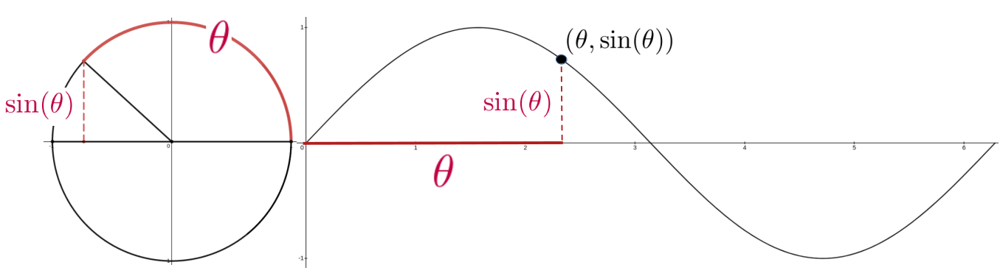
Notice that as the angle (arc) sweeps around the unit circle from \(0\) to \(2\pi\text{,}\) the graph of \(\sin(\theta)\) cycles from \(0\) (at \(\theta=0\)), to \(1\) (at \(\theta=\pi/2\)), to \(0\) (at \(\theta=\pi\)), to \(-1\) (at \(\theta=3\pi/2\)), and back to \(0\) (at \(\theta=2\pi\)).
Drill6.12.
A similar development gives us the graph of \(y=\cos(\theta)\text{.}\)
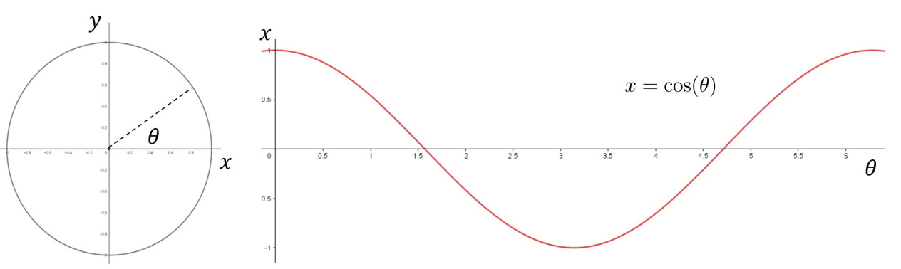
Use the diagram above to explain why the cosine cycles from \(1\text{,}\) to \(0\text{,}\) to \(-1\text{,}\) to \(0\) to \(1\text{.}\) for \(0\le \theta\le 2\pi\text{.}\) What are the precise values of \(\theta\) where the cosine takes on those values?
Subsection6.1.3Modeling with Trigonometric Functions
The sine and cosine functions are periodic functions. As such they are useful for modeling phenomena which are cyclical in nature; that is, phenomena which repeat the same pattern periodically. This periodicity is reflected in the formulas: \begin{align*} \cdots = \sin(\theta-2\pi)\amp =\sin(\theta)=\sin(\theta+2\pi)=\sin(\theta+4\pi)=\cdots \cdots = \cos(\theta-2\pi)\amp =\cos(\theta)=\cos(\theta+2\pi)=\cos(\theta+4\pi)=\cdots \end{align*} The rationale for the term periodic is very evident when we graph \(\sin(\theta)\) on a set of \((\theta, y)\) axes.
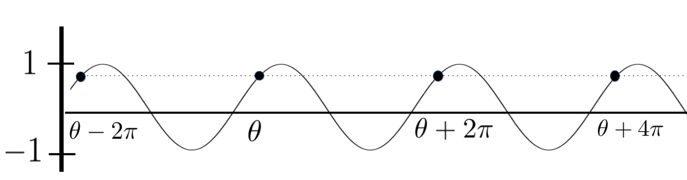
As you can see a full cycle is completed over every interval of length \(2\pi\text{.}\) Thus the sine and cosine functions are said to be \(2\pi\)-periodic. We can start our cycle for any value of \(\theta\text{,}\) but you are probably accustomed to graphing one complete cycle over the interval \([0,2\pi]\) as in the graphs below.
Drill6.13.
Because \(\sin(t)\) and \(\cos(t)\) complete one cycle on an interval of \(2\pi\) they are called \(2\pi\)-periodic functions. Suppose that \(A\text{,}\)\(B\text{,}\) and \(C\) are constants. Choose several non-zero values for \(A\text{,}\)\(B\text{,}\) and \(C\) (at least three of each) and graph the function
Notice that on any interval of length \(2\pi\) the function \(y=\sin(\theta)\) takes on every possible value between \(-1\) and \(1\text{,}\) so the amplitude of this sine wave is \(1\text{.}\) Changing the amplitude of a periodic function is easy. If we want an amplitude of \(5\) then we just multiply by \(5\text{:}\)\(y=5\sin(\theta)\text{.}\) This new function will oscillate between \(-5\) and \(5\text{.}\)
If we are modeling some real-world phenomenon then the amplitude will correspond to some physical attribute of the phenomenon. For example increasing the amplitude of a sound wave will increase the volume of the sound.
The sinusoidal axis is the horizontal line in the center of the range. So, for \(y=\sin(\theta)\) the sinusoidal axis is horizontal axis (\(y=0\)) because the graph of \(y=0\) is at the center of the range \(-1\le y\le1\text{.}\) Likewise the horizontal axis is the sinusoidal axis for \(y=5\sin(\theta)\text{.}\) But if we have \(y=3+5\sin(\theta)\text{,}\) this would shift the sinusoidal axis to the line \(y=3\text{,}\) because this line would be at the center of the range and the wave would oscillate between \(3-5=2\) and \(3+5=8\text{.}\)
Drill6.15.
Suppose we had a sinusoidal wave oscillating between \(-4\) and \(12\text{.}\) What would be the amplitude and what would be the sinusoidal axis of this wave?
Example6.16.
The pitch of a sound wave is regulated by how fast the wave is oscillating. Faster oscillations mean higher pitches. Suppose we want a wave that oscillates once per second. Our base function, \(y=\sin(\theta)\text{,}\) oscillates once over the interval \(0\le \theta\le2\pi\text{.}\) Divide \(\theta\) by \(2\pi\text{,}\) so that we have one oscillation occurring when \(0\le \frac{\theta}{2\pi}\le 1\text{.}\) If we let \(t=\frac{\theta}{2\pi}\) so that \(\theta=2\pi t\) then \(y=\sin(2\pi t)\) oscillates at a rate of one cycle per second as in the following graph.
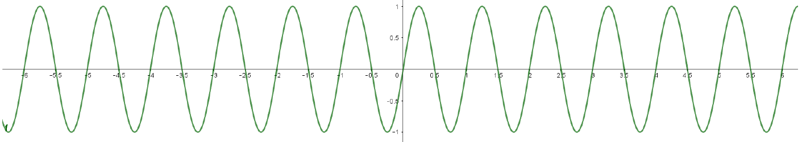
Now suppose we want to double the frequency to \(2\) oscillations per second. Again our base function \(y=\sin(\theta)\) oscillates once for \(0\le \theta \le 2\pi\text{.}\) We want two oscillations per second or one oscillation per half second. So, we want \(0\le\frac{\theta}{4\pi}\le \frac12\text{.}\) Letting \(t=\frac{\theta}{4\pi}\) we see that \(y=\sin(4\pi t)\) oscillates once every half second (or twice every second) as in the following graph.
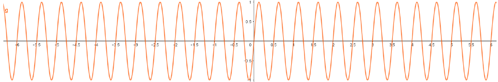
The number of cycles per second is referred to as the number of Hertz (Hz). So \(y=\sin(2\pi t)\) oscillates at \(1\) Hz and \(y=\sin(4\pi t)\) oscillates at \(2\) Hz.
Problem6.17.
(a)
Mimic the derivation above to determine \(\omega\) so that \(y=\sin(\omega t)\) oscillates at \(h\) Hz.
(b)
The standard musical pitch is the \(A440\) or \(A_4\text{,}\) the musical note A above middle C. \(A_4\) has a frequency of \(440\) Hz. Determine \(\omega\) so that an \(A_4\) note can be modeled by \(y=\sin(\omega t)\text{.}\) Do the same with each of the following notes.
\(C_4\text{,}\) (\(261.63\) Hz)
\(D_4\text{,}\) (\(293.66\) Hz)
\(E_4\text{,}\) (\(329.63\) Hz)
\(F_4\text{,}\) (\(349.23\) Hz)
\(G_4\text{,}\) (\(392\) Hz)
\(B_4\text{,}\) (\(493.88\) Hz)
(c)
Musical notes an octave higher have frequencies that are doubled. So, \(A_5\) (one octave higher than \(A_4\)) has a frequency of \(880\) Hz. Repeat part (b) for \(A_5\text{,}\)\(C_5\text{,}\)\(D_5\text{,}\)\(E_5\text{,}\)\(F_4\text{,}\)\(G_5\text{,}\) and \(B_5\text{,}\) each one octave higher than the corresponding note in part (b).
Subsection6.1.4Phase Shifts
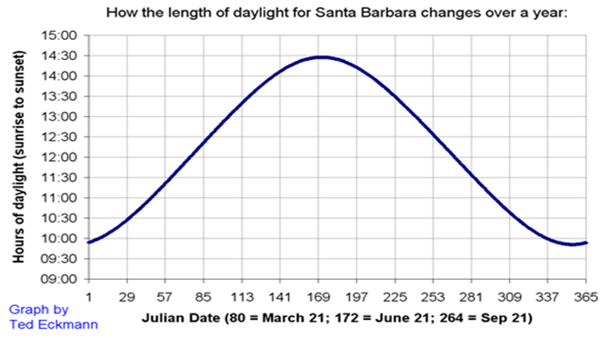
There is one more aspect of periodic functions we need to address before we put all of this together, and that is the phase shift. To illustrate phase shift, consider the graph at the right. We last saw this graph when we introduced Fermat’s Method of Adequality in [cross-reference to target(s) "SECferm-meth-aedeq" missing or not unique]. It represents the number of hours of daylight in Santa Barbara, CA over a given year. The graph of \(y(t)\) represents a full cycle (one year) but it is not quite the graph of \(y(t)=12+2.26\sin\left(\frac{2\pi t}{365}\right)\) as we would expect from our discussion of period and amplitude. The graph of \(y(t)\) gives the correct sinusoidal axis of \(y=12\text{,}\) and the correct maximum \((12+2.26=14.26)\) and minimum \((12-2.26=9.74)\) but it does not quite match the blue graph.
We can easily see the problem if we compare our original graph (above) to the graph of \(y(t)\) as seen in the figure at the left. The two graphs clearly have the same shape but our guess has been shifted to the left by about \(80\) days. Since the red graph represents the typical graph of a single cycle for a sine curve, we say that the blue graph has undergone a phase shift of \(80\) days. Let’s make this a bit more precise.
The red sine wave \(y(t)=12+2.6\sin\left(\frac{2\pi t}{365}\right)\text{,}\) shows that at day \(1\) (January \(1\)) we have \(12\) hours of daylight, and immediately thereafter the number of hours of daylight increases. But we know that this actually happens at the spring equinox, March \(21\) or day \(80\text{.}\) For the red graph to coincide with the blue graph we need for it to shift to the right so that it shows \(12\) hours of daylight on day \(80\) and completes one cycle in the interval \([80, 445]\text{.}\)
To obtain the proper equation, we go back to basics. Our basic sine wave \(y=\sin(\theta)\) oscillates once for \(0\le\theta\le 2\pi\text{.}\) To get the proper period, we have
Let \(t=\frac{365\theta}{2\pi}+80\text{.}\) Solve this for \(\theta\) and use this to find a formula for the number of hours of daylight per day in Santa Barbara, CA on any given day with \(t=0\) representing January 1. Graph this and compare your graph with the original graph.
Problem6.20.
Suppose we have a sine wave whose amplitude is given by \(a\text{,}\) period is given by \(p\text{,}\) sinusoidal axis is given by \(y=b\text{,}\) and whose phase shift is given by \(s\text{.}\) Show that the equation of this wave is
For each of the following waves find the amplitude, period, sinusoidal axis, and phase shift.
(a)
\(y=-1+3\sin(\pi(t+2))\)
(b)
\(y=12+2\sin(t-\pi)\)
(c)
\(y=\frac{\sin(3t-1)}{2}\)
(d)
\(y=\frac{\sin(3(t-1))}{2}\)
(e)
\(y=\frac{\sin(3t-1)}{2}-1\)
(f)
\(y=\frac{\sin(3\pi t-1)}{2}-\frac{\pi}{3}\)
Drill6.22.
Do you see that the cosine curve is basically the sine curve with a phase shift? What is the value of the phase shift? We usually restrict the phase shift to values between \(0\) and \(2\pi\text{.}\) Explain why this restriction is useful.
When we say that the coordinates of point \(P\) in the plane are \((x,y)\text{.}\) These coordinates are called Cartesian (or rectangular) coordinates in honor of Ren\’e Descartes who, as we mentioned in [cross-reference to target(s) "SECroberv-conic-sect" missing or not unique], was one of the pioneers in applying algebra to geometry. The geometric picture that goes with this is shown at the right.
Using rectangular coordinates is one way to to translate geometry problems into algebra problems and vice versa. This simple idea changed forever how mathematics is done. Really.
But Cartesian coordinates are not the only way we can locate points in the plane. If we superimpose a right triangle on the diagram above, as shown at the left, we can find another way to locate \(P\text{.}\) Since \(P\) is the endpoint of the ray starting at the origin and ending at \(P\) the ordered pair of numbers \((r,\theta)\) works just as well as the ordered pair \((x,y)\text{.}\) The numbers \(r\) and \(\theta\) are called the polar coordinates of \(P\text{.}\)
There are advantages and disadvantages to either coordinate system. For example the coordinates in the Cartesian system are unique. There is only point with rectangular coordinates, \((3,4)\) (where \(x=3\) and \(y=4\)). This is not true of polar coordinates. The point with polar coordinates \((2, \pi)\) (where \(r=2\) and \(\theta=\pi\)) is the same as the point with polar coordinates \((2,-\pi)\) (where \(r=2\) and \(\theta=-\pi\)). It is also the same as the point with polar coordinates \((-2,\pi)\text{,}\) where \(r=-2\) (gasp!). The idea of a negative value for \(r\) is a little jarring because we usually think of the negative sign as denoting negative numbers. Instead, think of it as meaning “go the opposite direction\aside{Thinking this way also explains why the negative of a negative must be positive. The number \(2\) is at the endpoint of a ray pointing to the right along the \(x\)-axis. If we put a negative sign in front we ``go the opposite direction” to \(-2\text{.}\) Another negative will reverse the direction again.}.’’
Drill6.25.
Explain why the polar coordinates \((r,\theta)\text{,}\)\((r,\theta +2\pi )\text{,}\)\((-r,\theta +\pi )\) all locate the same point in the plane. Find at least three other sets of polar coordinates that identify the same point. How many are there?
Drill6.26.
The following pairs of points are given in polar coordinates. Plot them all on the same set of axes and then check your answers using your favorite graphing software.
(a)
\((r,\theta)= (1, 0)\) and \((1, \pi)\)
(b)
\((r,\theta)= (2, \pi/4)\) and \((2, -\pi/4)\)
(c)
\((r,\theta)= (1, \pi/2)\) and \((1, 5\pi/2)\)
(d)
\((r,\theta)= (2, 7\pi/4)\) and \((2, -5\pi/4)\)
(e)
\((r,\theta)= (0, -\pi/2)\) and \((0, \pi/2)\)
(f)
\((r,\theta)= (1,\pi/3)\) and \((-1,\pi/3)\)
Drill6.27.
Of course, we’ll need to be able to translate from one coordinate system to the other.
(a)
Use the diagram above to show that if \(P=(r,\theta)\) in polar coordinates, and \(P=(x,y)\) in rectangular coordinates then,
\(x=r\cos(\theta)\text{,}\)
\(y=r\sin(\theta)\text{,}\)
\(\displaystyle \tan(\theta)=\frac{y}{x}.\)
(b)
In Cartesian coordinates the equation of a circle centered at the origin with radius \(a\gt 0\) is \(x^2+y^2=a^2\text{.}\) What is the equation of the same circle in polar coordinates? \hint{Use the result from part (a).}
Just like the Cartesian coordinates the order of polar coordinates matters. The radius \(r\) comes first, and the angle \(\theta\) comes second. Notice that there is nothing in the ordered pair notation that tells you which system is in play. This will usually be clear from the context but if you are ever unsure whether the ordered pair \((a,b)\) represents Cartesian or polar coordinates ask your instructor.
Drill6.28.
Plot the points \((1, \pi/4)\) and \((2,3)\) twice. First assume that they are polar coordinates and then assume that they Cartesian coordinates.
Drill6.29.
The graph of an equation given in polar coordinates is quite different from one given in Cartesian coordinates. To get a sense of this sketch the graph of each of the following functions in polar coordinates. \comment{Most graphing software has a built-in polar mode which will do this for you. This can be helpful once you are thoroughly familiar with the polar coordinate system but in the beginning you should do the graphing without the use of graphing software. Use technology to verify your graph after you’ve drawn it by hand.}
(a)
\(r=\sin(\theta)\)
(b)
\(r=\cos(\theta)\)
(c)
\(r=\sin(2\theta)\)
(d)
\(r=\sin(3\theta)\)
(e)
\(r=1+\cos(\theta)\)
(f)
\(r=1\)
(g)
\(\theta=\pi/4\)
(h)
\(r=\sin(\theta)\cos(\theta)\)
(i)
\(r=\sin(\theta)+\cos(\theta)\)
(j)
\(r=\sin(\theta)-\cos(\theta)\)
(k)
\(r=\tan(\theta)\)
(l)
\(r=\sec(\theta)\)
An advantage of using polar coordinates is that the formula that describes a curve can be extraordinarily complicated if we give \(y\) as a function of \(x\) but extraordinarily simple if we give \(r\) as a function of \(\theta\text{.}\) For example, consider the following Spiral of Archimedes 12 :
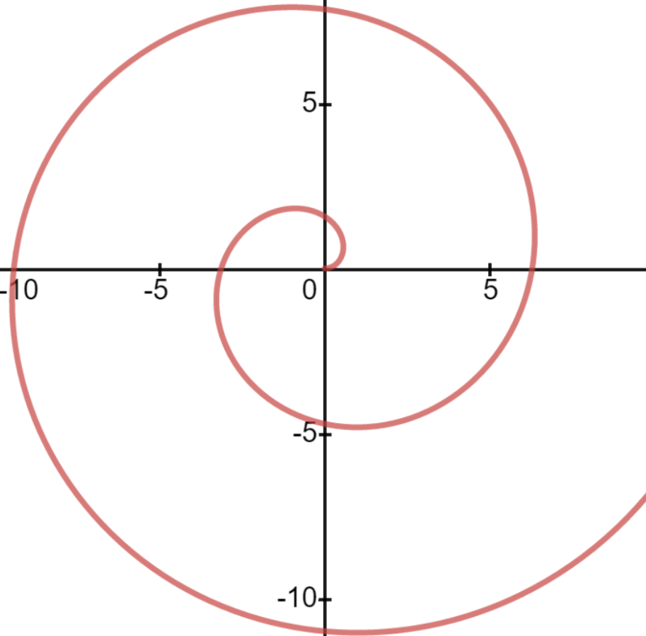
Drill6.30.
In polar coordinates the Spiral of Archimedes is the graph of the equation \(r =\theta, \theta\ge 0\text{.}\) Convert this to an equation in Cartesian coordinates. \hint{Use the results of [cross-reference to target(s) "DRILLPolRectConvert" missing or not unique].}
Section6.2The Differentials of the Sine and Cosine Functions
Recall that when a central angle \(\theta\text{,}\) of a unit circle is measured in radians then the arclength subtended by that angle will also be \(\theta\) as seen in the sketch at the left. Similarly, when we increase the angle \(\theta\) by \(\dx{\theta}\) the blue arc is also of length \(\dx{\theta}\text{.}\) Moreover, by the Principle of Local Linearity the blue arc length can be thought of as an infinitely small straight line. Thus it is the hypotenuse of the blue triangle.
Notice that when \(\theta\) is increased by \(\dx{\theta}\text{,}\)\(y\) is increased by \(\dx{y}\text{,}\) but \(x\) is decreased by \(\dx{x}\) which makes \(\dx{x}\) negative. But the sides of a triangle must be positive so the label on the blue triangle is \(-\dx{x}\text{.}\)
Part (e) of [cross-reference to target(s) "EXAMPLETrigDerivExamples" missing or not unique] is more useful than is immediately apparent because the complementary angle identities: \(\cos(\theta) = \sin\left(\pi/2-\theta\right) \text{ and }
\sin(\theta) = \cos\left(\pi/2-\theta\right)\) allow us to obtain the differential of either \(\sin(\theta)\) or \(\cos(\theta)\) provided only that we have the differential of the other. Use these identities to show the following:
(a)
If \(\dx(\sin(\theta))=\cos(\theta)\dx\theta\text{,}\) then \(\dx(\cos(\theta))=-\sin(\theta)\dx{\theta}\text{.}\)
(b)
If \(\dx(\cos(\theta))= -\sin(\theta)\dx{\theta}\text{,}\) then \(\dx(\sin(\theta)=\cos(\theta)\dx{\theta}\text{.}\)
(a)
(b)
(c)
(d)
(e)
(f)
(g)
(h)
(i)
Compute the differential, \(\dx{y},\) for each of the following functions:
(a)
\(y=\cos(-3\theta)\)
(b)
\(y=\sin(\theta)\cos(\theta)\)
(c)
\(y=\cos^2(\theta)\)
(d)
\(y=\cos(\theta^2)\)
(e)
\(y=\cos^2(\theta)+\sin^2(\theta)\)
(f)
\(y=\cos^2(\theta)-\sin^2(\theta)\)
(g)
\(y=\cos^4(\theta)-\sin^4(\theta)\)
(h)
\(y=\cos(5\theta^3-2\theta^2-3\theta+12)\)
(i)
\(y=\sin^2(7\pi \theta) + \cos^2(7\pi \theta)\)
(a)
(b)
(c)
(d)
(e)
(f)
Assume that \(x=x(t)\) and \(y=y(t)\text{.}\) Find an equation relating \(\dx{x}\) and \(\dx{y}\text{.}\) Use this to compute \(\dfdx{y}{x}\text{,}\)\(\dfdx{y}{t}\text{,}\)\(\dfdx{x}{y}\text{,}\) and \(\dfdx{x}{t}\)
(a)
\(\sin(xy)=\cos^2(x+y)\)
(b)
\(\sin(y)=x\)
(c)
\(y^2\sqrt{1+\sin^2(x)}=\cos(y)\)
(d)
\(\sin(2y)=\sin^2(xy^2)\)
(e)
\(\sin(x^2+y)=y\cos(x)\)
(f)
\(y^2\sqrt{1+\cos^2(x)}=y^2+x\)
Problem6.35.
(a)
For a fixed value of \(k\text{,}\) what are the largest and smallest possible values for the slope of the tangent line to the curve \(y = kx + \sin(x)\text{?}\)
(b)
For which values of \(k\) will the graph of \(y = kx + \sin(x)\) have horizontal tangent lines?
(c)
For which values of \(k\) will the graph of \(y = kx + \sin(x)\) not have horizontal tangent lines?
(d)
Find the values of \(x\) where the lines tangent to \(y=\frac{x}{2}+\sin(x)\) are horizontal. Graph the function to verify your answers.
Problem6.36.
(a)
Show that for \(0\le x\le 2\pi\text{,}\) the \(x\) coordinates of the points where the tangent line of \(y=\sin(x)+\cos(x)\) is horizontal are \(\frac{\pi}{4}, \frac{3\pi}{4}, \frac{5\pi}{4}\) and \(\frac{7\pi}{4}\text{.}\)
(b)
What are the corresponding \(y\) coordinates?
Problem6.37.
(a)
Show that, if \(a\) is constant then \(y(\theta)=a\sin(\theta)\) satisfies the equation
Show that, if \(b\) is constant then \(y(\theta)=b\cos(\theta)\) also satisfies [cross-reference to target(s) "EQUATIONeq:SHO-prelude" missing or not unique]
Problem6.38.
One of the authors once heard a television weatherperson remark that, “We gain and lose daylight faster at the equinoxes than at the solstices.” Recall that in [cross-reference to target(s) "PROBLEMSantaBarbaraDaylight" missing or not unique] you were asked to find a formula for the number of hours of daylight in Santa Barbara, CA. You should have obtained the solution \centerline{ \(y=12+2.26\sin\left(\frac{2\pi(t-80)}{365}\right)\text{.}\)} Use this to explain why the weatherperson’s claim does, or does not, make sense.
Problem6.39.
The following sketch represents a Ferris wheel rotating counterclockwise at a rate of one revolution every two minutes.
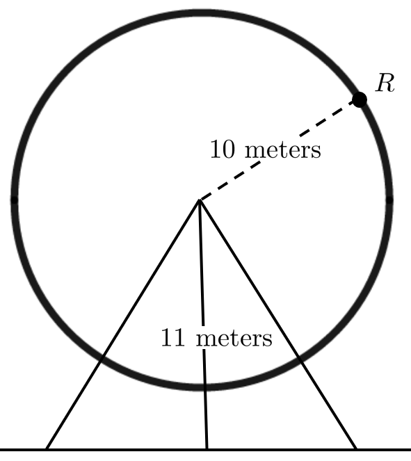
How fast is a rider \(R\) rising when his seat is \(16\) meters above the ground? What is the height of the rider when he is rising the fastest?
Subsection6.2.1Polar Coordinates and Calculus
In [cross-reference to target(s) "SECpolar-coordinates" missing or not unique] we introduced the polar coordinates and the equations
which allow us to convert from polar to rectangular coordinates.
Given a functional relation between \(r\) and \(\theta\) like those we saw in [cross-reference to target(s) "PROBLEMPolarGraphs" missing or not unique] it should be clear that the differential ratio \(\dfdx{r}{\theta}\) is not the slope of the tangent line. However it is still the rate of change of \(r\) with respect to \(\theta\text{.}\)
Regardless of which coordinate system we use, the slope of the line tangent to a curve is still given by \(\dfdx{y}{x}\) for the same reason that \(\frac{\Delta y}{\Delta x}\) gives the slope of the line: Both \(\dfdx{y}{x}\) and \(\frac{\Delta y}{\Delta x}\) represent a displacement in the vertical direction divided by a displacement in the horizontal direction. But \(\dfdx{r}{\theta}\) is the rate of change of distance from the origin, \(r\text{,}\) with respect to a change of the angle, \(\theta\text{.}\)
Problem6.40.
(a)
Use [cross-reference to target(s) "EQpolarx" missing or not unique] and [cross-reference to target(s) "EQUATIONeq:polary" missing or not unique] to find \(\dx{x}\) and \(\dx{y}\) in terms of \(\dx{r}\) and \(\dx{\theta}.\)
(b)
Show that the slope of the line tangent to the graph of \(r=r(\theta)\) (in polar coordinates) is given by
Find an equation of the line tangent to the Spiral of Archimedes, \(r=\theta\text{,}\)\(\theta\ge0\text{,}\) at \(\theta=\frac{\pi}{6}\text{,}\)\(\theta=\frac{\pi}{4}\text{,}\)\(\theta=\frac{\pi}{3}\text{,}\)\(\theta=\frac{\pi}{2}\text{,}\) and \(\theta=\pi\text{.}\) Graph the Spiral and your tangent lines together to confirm your computations.
(d)
Show that the line tangent to the Spiral of Archimedes is horizontal when \(\tan(\theta)=-\theta. \) Explain why this will only ever happen when the terminal side of the angle \(\theta\) is in the second or fourth quadrants.
(e)
Show that the line tangent to the Spiral of Archimedes is vertical when \(\tan(\theta)=\frac{1}{\theta}. \) Explain why this will only ever happen when the terminal side of the angle \(\theta\) is in the first or third quadrants.
Drill6.41.
Find the equation of the line tangent to the following curves at the given value of \(\theta.\)
Suppose a bead is sliding down a frictionless wire from point \(A\) to point \(B\) as seen at the left. Assuming that the bead starts at rest and slides down the wire under only the influence of gravity, what shape do you think the wire must have if the bead descends from \(A\) to \(B\) in the least possible time. Galileo thought the path of least time had to be a circular arc as we’ve drawn it here, but he could not prove it. Think about this for a moment before reading on. What does your intuition tell you the solution must be?
This question is known as the Brachistochrone Problem\aside{From two Greek words meaning “least time.” 16 }. In \(1696\) the Swiss mathematician Johann Bernoulli published the statement of the Brachistochrone Problem along with the following challenge: \begin{center} \begin{minipage}{.7\linewidth} \it I, Johann Bernoulli, address the most brilliant mathematicians in the world. Nothing is more attractive to intelligent people than an honest, challenging problem, whose possible solution will bestow fame and remain as a lasting monument. Following the example set by Pascal, Fermat, etc., I hope to gain the gratitude of the whole scientific community by placing before the finest mathematicians of our time a problem which will test their methods and the strength of their intellect. If someone communicates to me the solution of the proposed problem, I shall publicly declare him worthy of praise. \end{minipage} \end{center}
At the time an acrimonious rivalry existed between Continental and British mathematicians concerning whether Newton’s Method of Fluxions or Leibniz’ Calculus Differentialis was the better approach to Calculus. Bernoulli didn’t believe Newton would be able to solve the Brachistochrone Problem so the challenge was intended in part to show that Leibniz’ approach was better.
At that point in his life Newton had stopped doing science. He had been appointed England’s Warden of the Mint and was given the Herculean task of recalling and replacing all of the country’s coinage. He had nothing to gain by attempting the problem but the challenge probably irritated him because he later complained, \begin{center} \begin{minipage}{.7\textwidth} \it I do not love . . . to be . . . teezed by forreigners about Mathematical things. \end{minipage} \end{center} According to his niece, Catherine Conduitt,
\begin{center} \begin{minipage}{.7\textwidth} \it When the problem in \(1696\) was sent by Bernoulli Sir I. N. was in the midst of the great recoinage and did not come home till four from the Tower very much tired, but did not sleep till he had solved it, which was by four in the morning. \end{minipage} \end{center}
Newton submitted his solution anonymously but the presentation was so uniquely in his style of written mathematics that when he received it Bernoulli immediately recognized that the solution had come from Newton because, as he put it, \begin{center} \begin{minipage}{.7\textwidth} \it I know the lion by his claw. \end{minipage} \end{center}
Johann Bernoulli also received solutions from his student, the Marquis de \lhop (whom we will meet again in Chapter 12), his older brother Jacob Bernoulli, and Leibniz. Of course Johann had a solution of his own as well.
It turned out that the path of least time is an inverted cycloid 18 . A cycloid is the curve generated by tracing the path of a point on the edge of a wheel as it rolls in a straight line without slipping, like the bicycle wheel at the right.%
We will not be solving the Brachistochrone Problem ourselves because it is a bit beyond the scope of this course. But the solution, the cycloid curve had been studied long before the invention of Calculus. Naturally, the invention of Calculus gave us a new window on the properties of cycloids.
For example, if you make a bowl whose cross section is an inverted cycloid then objects sliding to the center (again, we ignore friction) will take the same length of time to reach the bottom regardless of their starting position. This is known as the Tautochrone Problem. Christiaan Huygens 19 used this fact to design a better pendulum clock than had previously existed. This is explored in more depth in [cross-reference to target(s) "APPENDIXradi-curv-accord" missing or not unique].
It would be difficult to express the cycloid as the graph of some curve: \(y=y(x)\text{.}\) But it is fairly simple to parameterize it, as we will see in [cross-reference to target(s) "PROBLEMcycloid2" missing or not unique]. In our parameterization \(\theta\) will still represent an angle but this time the vertex of the angle is at the center of the wheel, which is in motion. This makes the parameterization a little more interesting\aside{Often, “interesting” also means “more challenging.” }. The placement of \(\theta\) is shown schematically in the next problem.
Problem6.44.
Let \(\rho\) be a point on a circle of radius \(a\) that is rolling on the \(x\)-axis and let \(P(\theta)=
\begin{ParamEq}
{x(\theta)} {y(\theta)}
\end{ParamEq}\) be the position of \(\rho\) when the ball has rolled through an angle of \(\theta\text{.}\) \centerline{\includegraphics*[height=1.6in,width=3.8in]{../Figures/Cycloid2}}
(a)
Use the diagram above to show that the parameterization of \(P(\theta)\) is given by
Compute \(\dx{x}\) and \(\dx{y}\) in terms of \(\dx{\theta}.\)
Find the slope of the tangent line to the cycloid at an arbitrary point \(P\) in terms of \(\theta\) and use this to confirm that the tangent line is horizontal at the apex of the cycloid, point \(P\) in our diagram.
of \(P\text{.}\) What do you notice about the speed of \(P\) in relation to the circle’s radius? Do you find this surprising? \hint{Consider using [cross-reference to target(s) "EQUATIONeq:PythTheorDiff" missing or not unique].}
When is \(P\) moving the fastest and when is it moving the slowest? Does this make sense physically?
Subsection6.2.3Spin Casting, Redux
In [cross-reference to target(s) "SECself-inters-curv" missing or not unique] we saw how Newton’s fluxional approach to Calculus led us naturally to the notion of parametric equations, \(P(t)=\begin{ParamEq} { x=x(t)} { y=y(t)} { a\lt t \lt b}
\end{ParamEq}
\text{.}\)
Recall that in the [cross-reference to target(s) "PICSpinCast1" missing or not unique] we asserted, without justification, that the centripetal force holding the spinning, molten glass in its circular path is given by the formula \(mr\omega^2\text{.}\) We now have the tools we need to justify this claim.
If an object having mass \(m\text{,}\) is revolving in a circle of radius \(r\) meters around an axis with an angular velocity of \(\omega\) radians/second, the centripetal force that keeps it moving in a circle is directed toward the center of the circle. Anything moving in a circular path is held on course by a centripetal or “center seeking” force.
Recall that force and acceleration are related by Newton’s Second Law of Motion: \(\text{force}=\text{mass}\times\text{acceleration}.\) Thus to show that the force is what we said it was we’ll need to show that the centripetal acceleration is given by \(r\omega^2\text{.}\)
Problem6.46.
To compute centripetal acceleration, we will consider the point \(P\) traveling around the circle, with radius \(r\text{,}\) so that its position at time \(t\) is given by
The velocity in the direction of motion, \(v=\dfdx{s}{t}\text{,}\) is tangent to the circle and is composed of the velocity in the \(x\) direction \(\left(\dfdx{x}{t}\right)\) and the velocity in the \(y\) direction \(\left(\dfdx{y}{t}\right)\text{:}\)\(v=
\begin{ParamEq}
{\dfdx{x}{t}\bigstrut} {\dfdx{y}{t}}
\end{ParamEq}\) as seen below. \centerline{\includegraphics*[height=2in,width=2.3in]{../Figures/Centripetal1}}
(a)
The magnitude of the velocity (speed) in the direction of motion is the length of \(v\text{.}\) Show that the speed of \(P\) is given by:
\hint{Use the Pythagorean Theorem.} \comment{This also follows directly from the definition of radian measure. We want you to do it this way in this problem because you will do a similar computation for acceleration in part (b) below.}
(b)
Assume that the angular velocity is constant: \(\dfdx{\theta}{t}=\omega\text{.}\) Acceleration, like velocity, consists of a magnitude and a direction. In this case, the centripetal acceleration, represented by \(a\) in our diagram below, is composed of the vertical acceleration \(\dfdxn{y}{t}{2},\) and horizontal acceleration \(\dfdxn{x}{t}{2}.\) \centerline{\includegraphics*[height=2.3in,width=2.3in]{../Figures/AngularVelocity}} The length of the arrow, \(a\) is the magnitude of the centripetal acceleration. Compute \(\dfdxn{x}{t}{2}\) and \(\dfdxn{y}{t}{2}\text{,}\) and show that the length of the centripetal acceleration is given by
which is what we said it was in [cross-reference to target(s) "PROBLEMPIC:SpinCast1" missing or not unique].
DIGRESSION: The Centripetal and Tangential Forces.
In Problem~\ 6.46 we assumed the angular velocity, \(\left(\dfdx{\theta}{t}=\omega\right)\) was constant, so that we could focus our attention on the centripetal force that keeps the point \(P\) moving in a circle. In Problem~\ 6.46 only the centripetal force was in play. But consider a model airplane flying at the end of a cord, as in the sketch below.
Now we have two forces to contend with. The tension in the cord (shown in red) supplies the centripetal (center seeking) force, while the force of the engine (thrust) will always be in the direction of motion, tangential to the path at \(P\) (shown in blue). Since the airplane will speed up or slow down depending on the magnitude of the thrust the airplane is no longer constrained to fly at a constant angular velocity.
Finding an expression for the centripetal and tangential acceleration is a straightforward, though somewhat daunting, exercise in differentiation.
Problem6.47.
Show that if a point, \(P=
\begin{ParamEq}
{x(t)}
{y(t)}
\end{ParamEq}
\text{,}\) is constrained to move in a circle (so that \(x=r\cos(\theta)\) and \(y=r\sin(\theta)\)) but that \(\dfdx{\theta}{t}\) is no longer constant, then the horizontal acceleration \(\left(\dfdxn{x}{t}{2}\right)\) and the vertical acceleration \(\left(\dfdxn{y}{t}{2}\right)\) are given by, \begin{align} \label{eq:HorizAccel} \dfdxn{x}{t}{2}\amp = \textcolor{blue}{-r\dfdxn{\theta}{t}{2}\sin(\theta)}\textcolor{red}{-r\left(\dfdx{\theta}{t}\right)^2\cos(\theta)} \label{eq:VertAccel} \dfdxn{y}{t}{2}\amp = \textcolor{blue}{r\dfdxn{\theta}{t}{2}\cos(\theta)}\textcolor{red}{-r\left(\dfdx{\theta}{t}\right)^2\sin(\theta)}. \end{align}
From Newton’s Second Law of Motion, (\(\text{force}=\text{mass}\times\text{acceleration}\)), we see that the horizontal and vertical forces acting on the airplane are \(m\dfdxn{x}{t}{2}\) and \(m\dfdxn{y}{t}{2}\text{.}\) We’d like to resolve these into their centripetal and tangential components.
Drill6.48.
Show that the red terms in [cross-reference to target(s) "EQHorizAccel" missing or not unique][cross-reference to target(s) "EQVertAccel" missing or not unique] are the horizontal and vertical components of the centripetal acceleration by confirming that they are the same as the \(\dfdxn{x}{t}{2}\) and \(\dfdxn{x}{t}{2}\) that you computed for part (b) of Problem~\ 6.46.
[cross-reference to target(s) "DRILLCentripetaAcclDecomposition" missing or not unique] suggests that the red terms in [cross-reference to target(s) "EQHorizAccel" missing or not unique][cross-reference to target(s) "EQVertAccel" missing or not unique] are the horizontal and vertical components of the centripetal acceleration. If that is true (it is) then the blue terms must represent the tangential acceleration. Thus, by Newton’s Second Law, we obtain the horizontal and vertical components of the tangential force by multiplying the horizontal and vertical accelerations by \(m\text{.}\) This gives us \begin{center} \begin{description} \item[Horizontal Force:] \(-mr\dfdxn{\theta}{t}{2}\sin(\theta)\) \item[Vertical Force:] \(mr\dfdxn{\theta}{t}{2}\cos(\theta)\) \end{description} \end{center} All of our results so far are depicted in the sketch at the right.
Finally, we let \(s(t)\) represent the length of the circular arc traced by \(P\) at time \(t\text{.}\) Since \(\theta\) is measured in radians we know that the length of a circular arc, \(s\) is \(s=r\theta\text{.}\) Applying the Constant Multiple Rule we see that \(\dx{s}=r\dfdx{\theta}{t}\dx{t}.\) Since \(\dx{s}\) represents an infinitesimal displacement tangent to the circle we see that
is the tangential acceleration. So [cross-reference to target(s) "EQHorizAccel" missing or not unique][cross-reference to target(s) "EQVertAccel" missing or not unique] can be expressed as \begin{align*} \dfdxn{x}{t}{2}\amp = \textcolor{blue}{-\dfdxn{s}{t}{2}\sin(\theta)}\textcolor{red}{-r\left(\dfdx{\theta}{t}\right)^2\cos(\theta)} \dfdxn{y}{t}{2}\amp = \textcolor{blue}{\dfdxn{s}{t}{2}\cos(\theta)}\textcolor{red}{-r\left(\dfdx{\theta}{t}\right)^2\sin(\theta)}. \end{align*}
In this form these equations express the relationship between the various accelerations in play (horizontal, vertical, centripetal, and tangential). The forces are obtained from Newton’s Second Law by multiplying both sides of both equations by the mass, \(m\text{.}\) We, the authors, think of this as “uncancelling” \(m\text{.}\)
Drill6.50.
Use the diagram above to show that the magnitude of the thrust, \(m\abs{\dfdxn{s}{t}{2}}\text{,}\) is given by
Much of what occurs in the real world recurs periodically. As we saw in [cross-reference to target(s) "PROBLEMSantaBarbaraDaylight2" missing or not unique] the number of hours of daylight in Santa Barbara, California (and everywhere else) changes regularly over the course of a year The sun, moon, and stars rise and set regularly ever \(24\) hours. The compression of your heart muscle repeats periodically every few seconds. Can you think of other examples of periodic behavior in the natural world?
The usefulness of the trigonometric functions, especially the sine and cosine, comes from the fact that they are also periodic. With enough effort the sine and cosine functions can be used to model any periodic behavior, but the phrase “with enough effort” covers a lot. It is possible to model the compression of your heart using only sines and cosines, but the required theory and methods are beyond the scope of this text. We’ll keep things simple.
A function \(y(t)\) is said to be a Simple Harmonic Oscillator (SHO) if it satisfies the second order differential equation
for some constant \(\omega\text{.}\)[cross-reference to target(s) "EQSHO" missing or not unique] is a little scary at first but it really isn’t that bad. To simplify things suppose for a moment that \(\omega=1\text{.}\) Then we have \(\dfdxn{y}{t}{2}=-y\) which says simply that \(y(t)\) is a function whose second derivative is equal the negative of \(y\) itself.
Of course, you already know two such functions. Since
Don’t overthink this. Build on the two that you already know.}
[cross-reference to target(s) "EQSHO" missing or not unique] is used to model vibrations of buildings, acoustics, AC circuits, molecular, and crystal vibrations; basically anything that oscillates, but where the effects of air resistance are negligible. In [cross-reference to target(s) "SECleonh-euler-harm" missing or not unique]), after we have expanded our repertoire of functions a bit, we will look at one way we can incorporate the role of air resistance into our computations so that we can extend the usefulness of our analysis.
Problem6.52.
(a)
Show that \(y=A\sin(\omega t) + B\cos(\omega t)\) satisfies [cross-reference to target(s) "EQSHO" missing or not unique]. for any constants \(A\) and \(B\text{.}\)
(b)
Determine the values of the constants \(A\) and \(B\) if \(y ( 0 )=-2\) and \(\left.\dfdx{y}{t}\right|_{t=0}=0.\) % What would this mean plot the graph of \(y(t)\) for these values of \(A\) and \(B\text{.}\)
The classical physical example of a simple harmonic oscillator is an object with mass, \(m\text{,}\) hanging from one end of a spring, as shown at the right. In this sketch the horizontal axis is time so it shows the same bouncing spring at three different times. Assume that our spring is anchored in some way at the top. When the weight of the object and the restoring force of the spring balance exactly we say that they are in equilibrium as illustrated by the leftmost spring in our sketch. Robert Hooke 23 (\(1635-1703\)), who we encountered back in [cross-reference to target(s) "SECbridg-chains-telesc" missing or not unique], was a leading elder scientist when Newton was young and a rising star in English science. Hooke was the first to show that the restoring force exerted by a spring (the force back toward equilibrium) is directly proportional to the length of its extension beyond equilibrium. This is known today as Hooke’s Law for Springs (or just Hooke’s Law) and it is true whether the spring is stretched or compressed.
If we let \(y=y(t)\) denote the vertical displacement of the mass from equilibrium then Hooke’s Law says that the restoring force of the spring is given by \(-ky\text{,}\) for some positive constant \(k\) (called the spring constant). For a relatively weak spring, \(k\) would have a small value. For a relatively strong spring, the value of \(k\) would be large. If we let \(F\) represent the restoring force acting on the hanging mass then we have
\begin{equation*}
F=-ky.
\end{equation*}
Since the spring constant, \(k\text{,}\) is positive the negative sign in front of \(k\) is necessary. But it is easy to misinterpret this. The negative sign does not mean that the force \(F\) is always negative (upward in our diagram). In the analysis above the sign of \(F\) will be the negative (opposite) of the direction of the displacement of \(y\text{.}\) If the spring is displaced in the positive direction (stretched downward in our diagram) then the \(-k\) in front guarantees that the force, \(F\text{,}\) will be negative (upward). Conversely if we displace the spring in the negative direction (compressed upward in the diagram) then the \(-k\) guarantees that \(F\) is positive.
As we have seen the acceleration of an object is the second derivative of its position with respect to time, or \(\dfdxn{y}{t}{2}\text{.}\) Thus according to Newton’s Second Law, the force acting on our mass will satisfy \(F=m\dfdxn{y}{t}{2}\text{.}\) Finally, since \(F\) represents the same force in both Hooke’s Law and Newton’s Second Law, we see that the vertical displacement of our mass must satisfy the equation
which is equivalent to [cross-reference to target(s) "EQSHO" missing or not unique]).
Drill6.55.
Show that [cross-reference to target(s) "EQSHO" missing or not unique] and [cross-reference to target(s) "EQSHO2" missing or not unique] are equivalent as we’ve claimed. \hint{What is \(\omega\) in [cross-reference to target(s) "EQSHO2" missing or not unique]?}
DIGRESSION.
You may be wondering why we’ve neglected the force due to gravity (which will be the weight of the object or \(mg\) where \(m\) is it’s mass and \(g=9.8 \frac{\text{meters}}{\text{second}^2}\)) in Equation~ (6.5)). Actually, this was accounted for when we chose our coordinate system so that \(y=0\) at the equilibrium point. At equilibrium the upward force from the spring exactly balances the downward force of gravity (that’s why it’s called equilibrium) so we can proceed as if those forces are not there. This does not say that there are no other forces acting on the object, only that such forces as exist are exactly in balance; they add to zero.
If you buy this intuitive argument, then fine. If not, work through the following problem.
Problem6.56.
Remember that the positive direction is downward. Assume that the weight of the object extends the spring a distance of \(y_0\) as shown, and that \(y\) is the vertical displacement of the object from equilibrium.
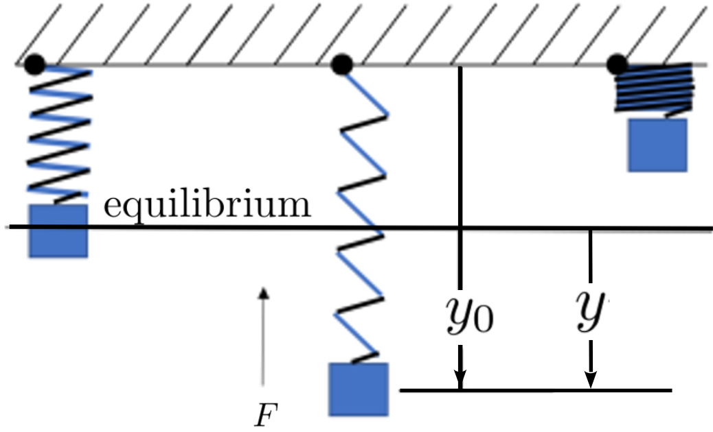
Notice that the downward force is the weight of the object and the upward force is the pull of the spring.
(a)
Show that the vertical displacement of the object satisfies the equation
Use the fact that when the object is at rest, \(y=0\) to conclude that \(ky_0=mg\) and use this to conclude that the spring-object system still satisfies [cross-reference to target(s) "EQUATIONeq:SHO2" missing or not unique]
END OF DIGRESSION
Problem6.57.
Show that \(y(t)=2\cos\left(\sqrt{k/m}\cdot t\right) \) will satisfy [cross-reference to target(s) "EQUATIONeq:SHO2" missing or not unique].
(a)
Compute \(y(0)\) and \(\eval{\dfdx{y}{t}}{t}{0}\text{.}\) If we are modeling a mass-spring system, what do these values represent physically?
(b)
Compare the graphs of \(y(t)\) for each of the following choices of \(k\) and \(m\text{.}\)
\(k=1\text{,}\)\(m=1\text{,}\)
\(k=4\text{,}\)\(m=1\text{,}\)
\(k=1\text{,}\)\(m=4\text{.}\)
In particular, how do the values of \(k\) and \(m\) affect the frequency of the oscillation? Is this consistent with what \(k\) and \(m\) represent physically?
(c)
For which values of \(y\) do the greatest and smallest velocities occur? What is the acceleration at each of these points? Is this consistent with the idea that the mass is transitioning from speeding up to slowing down and \foreign{vice versa}? Explain.
(d)
For which values of \(y\) is the acceleration the largest and the smallest? Is this consistent with both Newton’s Second Law and Hooke’s Law? Explain.
Section6.3The Differentials of the Other Trigonometric Functions
Once the differential of \(\sin(x)\) is known, the differentials of the other trigonometric functions are easily computed. Since our current goal is simply to develop the tools we will need later we will not spend any more time on this than necessary.
Observe that by definition \(\tan(x)=\frac{\sin(x)}{\cos(x)},\) so the Quotient Rule applies: \begin{align*} \dx\left(\tan(x)\right) \amp = \dx{\left(\frac{\sin(x)}{\cos(x)}\right)} \amp = \frac{\cos(x)\dx(\sin(x))-\sin(x)\dx(\cos(x))}{\cos^2(x)} \amp = \frac{\cos^2(x)\dx{x} +\sin^2(x)\dx{x}}{\cos^2(x)} \amp = \frac{1}{\cos^2(x)}\dx{x} \intertext{and since \(\sec(x) = 1/\cos(x)\) we have} \dx{\left(\tan(x)\right)} \amp = \sec^2(x)\dx{x}. \end{align*}
Drill6.58.
Use the Quotient Rule to show that \(\dx{(\cot(x))} = -\csc^2(x)\dx{x}. \)
Observe that by definition \(\sec(x) = \frac{1}{\cos x} = \inverse{(\cos(x))}.\) Differentiating, we have
By similar means show that \(\dx{(\csc(x))} = -\csc(x)\cot(x)\dx{x}.\)
Remember all of those identities you had to memorize in Trigonometry? You can reduce that memorization burden a bit by using Calculus. If two variable quantities are equal then their differentials must be equal too. So if you differentiate both sides an identity you get another identity!
Example6.60.
Consider the double angle formula for the sine function: \(\sin(2x)=2\sin(x)\cos(x)\text{.}\) Differentiating gives \(\cos(2x)\dx x = \cos^2(x)\dx x -\sin^2(x)\dx x\) or
which is the double angle formula for the cosine function.
Example6.61.
We know that \(\sin^2(x)+\cos^2(x)=1\) no matter what value \(x\) has, so we’d expect that differential of \(\sin^2(x)+\cos^2(x)\) to be zero. Let’s check.
By the Sum Rule \(\dx(\sin^2(x)+\cos^2(x)) = \dx(\sin^2(x)) + \dx(\cos^2(x))\) and by the Power Rule we have \begin{align*} \amp = 2\sin(x)\dx(\sin(x)) + 2\cos(x)\dx(\cos(x)) \amp = 2\sin(x)\cos(x)\dx{x} + 2\cos(x)(-\sin(x))\dx x \amp = 2(\sin(x)\cos(x) - \sin(x)\cos(x))\dx x \amp = 0. \end{align*}
Drill6.62.
Since the sine and cosine functions are both differentiable and \(\dx{(\sin^2(x)+\cos^2(x))}=0\) we can conclude that \(\sin^2(x)+\cos^2(x)\) is (probably) equal to some constant. If we didn’t already know, how could we conclude that the constant is \(1?\)
We now know the differentials of all of the trigonometric functions. These are shown in the table below. Memorize them.
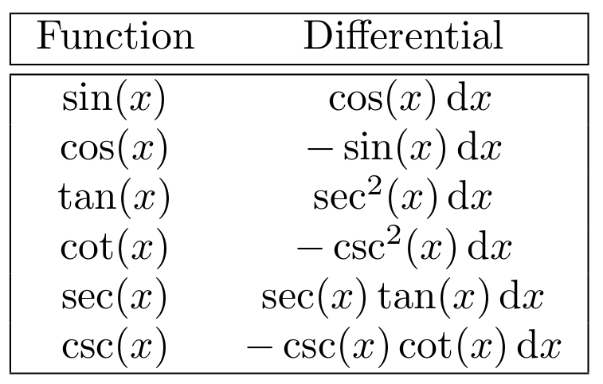
Drill6.63.
Differentiate both sides of each trigonometric identity to get another identity. Verify each identity (including the one you compute) by graphing the expression on both sides of the equals sign.
If possible find an equation of the line tangent to the graphs of \(y=\tan(x)\) and \(y=\sec(x)\) at each of the points below. If no such line exists explain why not.
(a)
\(x=0\)
(b)
\(x=\pm\frac{\pi}{6}\)
(c)
\(x=\pm\frac{\pi}{4}\)
(d)
\(x=\pm\frac{\pi}{3}\)
(e)
\(x=\pm\frac{\pi}{2}\)
(f)
\(x=\pm\frac{2\pi}{3}\)
Problem6.65.
Show that differentiating each of the identities below leads to the other. Assume \(A\) is a constant.
Assume that \(x=x(t)\) and \(y=y(t)\text{.}\) Find an equation relating \(\dx{x}\) and \(\dx{y}\text{.}\) Use this to compute \(\dfdx{y}{x}\text{,}\)\(\dfdx{y}{t}\text{,}\)\(\dfdx{x}{y}\text{,}\) and \(\dfdx{x}{t}\text{.}\)
(a)
\(\tan(x^2+y)=y\sec(x)\)
(b)
\(y^2\sqrt{1+\csc^2(x)}=y^2+x\)
(c)
\(\cot(y)=x\)
(d)
\(\sec^2(y+x)=y\csc(x^2)\)
Problem6.68.
Find an equation of the tangent line to each curve at the indicated point.
(a)
\(\tan(y)=x^2-x+1\) at \((1,\pi/4)\)
(b)
\(\cot^2(y)=x^2+x+3\) at \((0,\pi/6)\)
(c)
\(\csc(y)=x^2+x+2\) at \((0, \pi/6)\)
Problem6.69.
(a)
Show that the line tangent to the curve \(y=\tan(x)\) at \((x_0,y_0)\) is parallel to the line tangent to the curve at \((-x_0,-y_0).\)
(b)
Show that the line tangent to the curve \(y=\cot(x)\) at \((x_0,y_0)\) is parallel to the line tangent to the curve at \((-x_0,-y_0).\)
Problem6.70.
(a)
Show that there is no line tangent to the graph of \(y=\tan(x)\) which is parallel to any tangent line of the graph of \(y=\cot(x).\)
(b)
Show that this is not true of the graphs of \(y=x^3\) and \(y=-x^3\text{.}\)
Problem6.71.
\begin{wrapfigure}[]{r}{.75in} \vskip-14mm \captionsetup{labelformat=empty} \centerline{\includegraphics*[height=1.5in,width=.75in]{../Figures/RocketProblem1}} \label{fig:RocketProblem1} \end{wrapfigure} A camera located at \(C\) at ground level is tracking a rocket \(R\) which is traveling vertically and took off from a spot \(500\) meters from the camera.
(a)
How fast is the angle of elevation of the camera changing (in radians per second) when the rocket is \(1000\) meters high and traveling at \(250\) m/sec? \vskip.5in
(b)
Now suppose the rocket is climbing at an angle \(\pi/6\) radians off of vertical as shown in the diagram below. \centerline{\includegraphics*[height=1.5in,width=1.5in]{../Figures/RocketProblem2}} How fast is the angle of elevation of the camera changing (in radians per second) when the rocket is \(1000\) meters high and traveling at \(250 \frac{\text{m}}{\text{sec}}\text{?}\)
Problem6.72.
(a)
Use the Difference formulas for the sine and cosine from Trigonometry: \begin{align*} \sin(\alpha- \beta)\amp =\sin(\alpha)\cos(\beta)- \cos(\alpha)\sin(\beta) \cos(\alpha- \beta)\amp =\cos(\alpha)\cos(\beta)+ \sin(\alpha)\sin(\beta), \end{align*} to show that
Consider two points, \(P\) and \(Q\text{,}\) moving upward on the line \(x=1\text{,}\) with \(P\) above \(Q\) as seen in the sketch below:
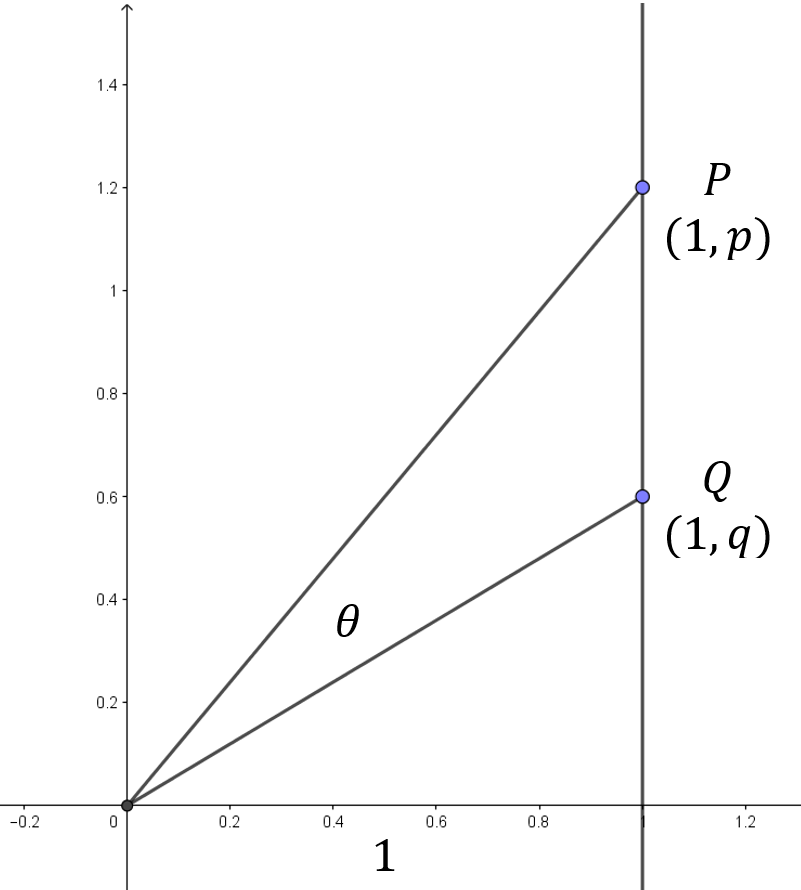
Suppose \(P\) is moving up at a rate of \(5\) units per second and \(Q\) is moving up at a rate of \(3\) units per second. How fast is \(\theta\) increasing when \(p=20\) and \(q=10?\)
Suppose \(Q\) is moving up at a rate of \(3\) units per second and we wanted the value of \(\theta\) to remain constant. How fast must \(P\) move?
Section6.4The Inverse Tangent and Cotangent Functions
If \(x\) is the tangent of \(y\text{,}\)\(x=\tan(y)\text{,}\) then we say that \(y\) is the arctangent of \(x\text{,}\)\(y=\arctan{x}\text{.}\) Speaking loosely, we’d like for the arctangent to be a function which “undoes” the tangent.
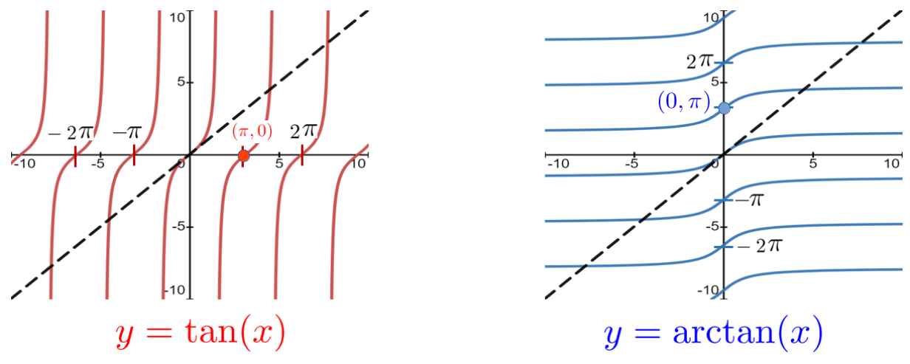
The sketch above shows the graph of \(y=\tan(x)\) (in red) and the same graph (in blue) reflected about the graph of the line \(y=x\) (dashed, in black). Reflecting in this manner swaps the coordinates of each point. For example, the point \((\pi, 0)\) is on the graph of \(y=\tan(x)\text{,}\) because \(\tan\left(\pi\right)=0\text{.}\) Similarly, the point \(\left(0,\pi\right)\) is on the graph of \(y=\arctan(x)\text{.}\)
But is it true that \(\arctan(0)=\pi\text{?}\) If we are to believe our graph, it could be true. But couldn’t it also be true that \(\arctan(0)=2\pi\text{,}\) or even \(\arctan(0)=-\pi\text{?}\) The blue graph above is clearly the graph of the arctangent as we have defined it but we seem to have a choice for the output of \(\arctan(x)\text{.}\) Many choices, in fact.
Having more than one output for a given input clearly violates what we mean when we use the word “function.” A mathematical function returns exactly one output for a given input. There is no choice. The sketch of the arctangent (in blue) is not the graph of a function. It is the graph of the multifunction \(\arctan(x)\text{.}\) Each of the blue curves on the right is one branch of the multifunction\aside{Note that by itself, any single branch of the arctangent is a function.}, \(\arctan(x)\text{.}\) In fact all of the “arc” functions from trigonometry are multifunctions. Mult-functions are interesting objects and are well worth studying. But this is not the time for that study. Right now we are only interested in the properties of the inverse function of \(\tan(x)\text{.}\) Since \(\arctan(x)\) is not a function, it can’t be the inverse function of \(\tan(x)\) so we will stop thinking about it as soon as we can.
But if \(\arctan(x)\) is not the inverse of \(\tan(x)\) what is? Since we only allow one output for a given input, could it be as simple as choosing just one of the branches of the \(\arctan(x)\text{,}\) say the one that lies between \(y=-\frac{\pi}{2}\) and \(y=\frac{\pi}{2}\text{,}\) shown below, and calling it the the inverse of \(\tan(x)\text{?}\)
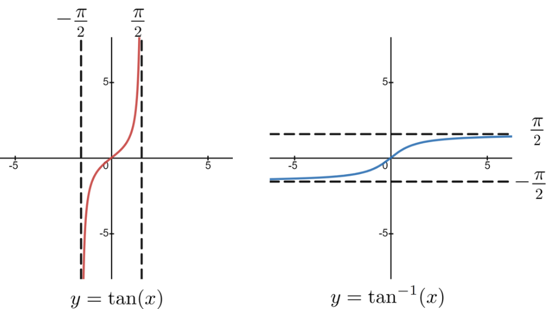
Actually, yes. It is just that simple. And the usual choice is the one we’ve indicated. In this text we will designate this branch of \(\arctan(x)\) with \(\inverse\tan(x)\text{.}\) Thus \(\inverse\tan(x)\) denotes the inverse tangent function. Because the multifunction arctangent is not a function we will henceforth ignore it as much as possible.
DIGRESSION: Inverse Function Notation.
The use of \(-1\) as an exponent is probably the most common notation used to indicate function inversion. Unfortunately, from the standpoint of a student it is also probably the worst notation we could have possibly invented because It is so very easily confused with reciprocation. While it is true that
\begin{equation*}
\label{eq:NegOneInv}
\inverse{\tan}(x) \text{ is not equal to } \frac{1}{\tan(x)}.
\end{equation*}
That the “\(-1\)” notation is used for both comes from the fact that both \(2^{-1}\) and \(\inverse\sin(x)\) really are inverses. But they are different kinds of inverses: \(\inverse2\) is the multiplicative inverse of \(2\text{,}\) which means simply that
\begin{equation*}
\frac12\cdot2=1 \text{ and that } 2\cdot\frac12 =1.
\end{equation*}
On the other hand \(\inverse\tan(x)\) is the functional inverse of \(x=\tan(y)\text{,}\) which means that if \(-\frac{\pi}{2}\lt x\lt \frac{\pi}{2}\) then
In [cross-reference to target(s) "EQNegOneRecip" missing or not unique] you can think of the \(-1\) in the exponent as an operator. It operates on \(2\) by taking its reciprocal: \(\inverse{2}=\frac12\text{.}\) In [cross-reference to target(s) "EQNegOneInv" missing or not unique] the \(-1\) is not an operator. It is part of the symbol, \(\inverse\tan\text{,}\) that we use to denote the inverse tangent.
With practice this all gets easier, but in the beginning it is very troublesome. Be careful.
But what, exactly, is \(\inverse\tan(x)\) the inverse of? From the sketch above it should be clear that restricting the range of \(\inverse\tan(x)\) to values in the interval \((-\pi/2, \pi/2)\) forced us to restrict the domain of \(\tan(x)\text{.}\) So
\begin{equation*}
\inverse\tan(x) \text{ with domain all real numbers, } (\RR)
\end{equation*}
is the inverse of \(\tan(x) \text{ with domain, } (-\pi/2, \pi/2),\) and it is not the inverse of \(\tan(x) \text{ with domain, } \RR\) because that function has no inverse.
An easy way to remember what \(\inverse{\tan}(x)\) means is to read the symbol \(\inverse{\tan}(x)\) as \centerline{“the angle whose tangent is \(x\text{.}\)”} The advantage of this phrasing is that it emphasizes that \(x\) is the tangent of some angle, and \(\inverse{\tan}(x)\) is that angle. Similarly the inverse functions of the other trigonometric functions should be read as \centerline{“the angle whose \{sine, cosine, secant, whatever\} is \(x\)”.} Each of these will also come with suitable restrictions on its range.
We should point out that reserving the “arc” notation for the trigonometric multifunctions is actually a conceit of the authors of this text. Most of the world uses \(\arctan(x)\) and \(\inverse\tan(x)\) interchangeably, and eventually you will too. But for now it will be helpful for you to keep in mind that the difference between them is that restricting the range of \(\inverse\tan(x)\) to \(-\frac{\pi}{2}\lt x\lt\frac{\pi}{2}\) guarantees that it is a function. But since the range of \(\arctan(x)\) is not similarly restricted it is not a function.
Drill6.74.
Suppose we had chosen \(\frac{\pi}{2}\lt \inverse\tan(x)\lt \frac{3\pi}{2}\text{.}\) What function (with domain) is that the inverse of?
All of this fussiness is really just about making our abstract definitions useful and consistent. It would be nice if these details only impinged on us in an abstract setting but unfortunately some practical difficulties do come up, as the following drill shows.
Problem6.75.
Find all solutions of \(\tan(x)=1\) and \(x=\inverse\tan\left(1\right)\text{.}\) Do they have the same set of solutions? \hint{Obviously, they do not. Otherwise we wouldn’t have asked the question. What is the difference between the two sets of solutions?}
DIGRESSION:\(tan(x)\) Has No Inverse.
The function \(\tan(x)\) is not invertible. This is because, by custom, its domain is all real numbers (except \(\frac\pi2, \pm\pi,
\pm2\pi, \pm3\pi, \cdots.\)) . Thus it is not the same function as
\begin{equation*}
\tan(x) \text{ with domain } -\frac{\pi}{2}\lt
x\lt \frac{\pi}{2}.
\end{equation*}
A function has two parts: (1) The set of inputs (domain) and (2) the rule associating input with output. Most of the time the domain is the set of all real numbers (\(\RR\)), so we don’t bother to explicitly state that the domain of, say \(f(x)=x^2\) is \(\RR\) . Unless otherwise specified we simply assume that it is. Properly speaking, we should always specify the domain of our functions, but typically we don’t. The custom is to assume that the domain of a function is \(\RR\) unless otherwise stated. Thus the function, \(\tan(x)\) cannot be inverted because on its domain (\(\RR\)) it has more than one branch.
Because we both want and need an inverse tangent function we restrict the range of \(\inverse\tan(x)\text{.}\) But this is the inverse of \(\tan(x)\text{,}\) with domain \(-\frac{\pi}{2}\lt x\lt \frac{\pi}{2}\text{,}\) which has only one branch. It is not the inverse of \(\tan(x)\text{,}\) because it has too many branches.
To use our notation as it was intended to be used we should say that \(\inverse\tan(x)\) is the inverse of \(\tan(x)\text{,}\) with domain \(-\frac{\pi}{2}\lt x\lt \frac{\pi}{2}\text{,}\) which is true. But instead, we typically just say that it is the inverse of \(\tan(x)\text{,}\) which strictly speaking, is not true.
When we (mathematicians) talk amongst ourselves this is not a problem. We all understand what we mean. But it can be very confusing for students who usually have a more tenuous grasp of these distinctions. It is a bit unfair of us (mathematicians) to speak to students in what amount to incomplete sentences, but we tend to do it anyway, mostly out of habit.
We (the authors) apologize.
END OF DIGRESSION
The definition of the arccotangent is similar to the definition of the arctangent: If \(x\) is the cotangent of \(y\text{,}\)\(x=\cot(y)\text{,}\) then we say that \(y\) is the arccotangent of \(x\text{,}\) and write
\begin{equation*}
y=\arccot(x).
\end{equation*}
The arccotangent is also a multifunction with multiple branches so, just as before, we will have to decide which branch to use to define the inverse cotangent: \(\inverse\cot{x}\text{.}\)
We obtained our branch for the single-valued function \(y=\inverse\tan(x)\) from the multifunction \(y=\arctan(x)\) by restricting its range to \(-\frac{\pi}{2}\lt y\lt\frac{\pi}{2}\text{.}\) A similar restriction would allow us to obtain the single-valued function \(\inverse\cot(x)\) from the multifunction \(\arccot(x)\text{,}\) but it is a bit simpler to once again use a trigonometric identity.
In a time when women had very few options in life Maria Ga\"{etana Agnesi} (1718-1799) was both exceptional and very lucky. Her brilliance and talent were recognized early and nurtured by her wealthy father, who encouraged her studies and provided her with the best possible tutors to develop her talents. She mastered the Calculus of Newton and Leibniz and in \(1748\) wrote a series of textbooks on the topic titled \href{https://www.maa.org/press/periodicals/convergence/mathematical-treasures-maria-agnesis-analytical-institutions{Instituzioni Analitiche ad Uso Della Giovent\`u Italiana}\aside{This is usually translated as Analytical Methods for the use of Italian Youth}.} It was immediately recognized as a masterpiece of mathematical exposition and was used throughout Europe during eighteenth century. It was by far the most popular Calculus textbook in use at the time. An Englishman, John Colson 26 , was so impressed with Agnesi’s work that in \(1760\) he took it upon himself to learn Italian specifically so that he could translate her text into English.
In her text Agnesi collected many of the known results of the time and organized them for the instruction of students. The Latin name of one of the curves that she used for instruction is versoria (“rope that turns a sail”) because of its shape. Agnesi correctly translated this into Italian as “la versiera.” Unfortunately Colson mistook this for “l’aversiera” which means “witch.” As a result this particular curve has been known ever since as the Witch of Agnesi.
As modern function notation was yet to be invented Agnesi understood this curve geometrically as a particular set of points. In the diagram at the right think of \(P\) as moving from left to right. For each value of \(x_0\text{,}\) draw the line from the origin to \(P\) and locate the vertical coordinate \(y_0\) where this line intersects the circle
centered at \(\left(0, \frac12\right)\text{,}\) with radius \(r=\frac12\text{.}\) Every point \((x_0,y_0)\) is a point on the Witch of Agnesi. The Witch itself is the curve shown in red.
Problem6.79.
In the diagram above show that the coordinates \(x_0\) and \(y_0\) satisfy the equation, \(y_0=\dfrac{1}{1+x_0^2}\text{.}\) Thus the Witch is the graph of
Whenever you encounter a new curve an important question to ask is, “What is its derivative?” In this case you already have everything you need to find the answer.
Drill6.80.
Show that if \(y=\frac{1}{1+x^2},\) then \(\dfdx{y}{x}=\frac{-2x}{(1+x^2)^2}.\) \end{embeddedproblem-1line}
Computing the derivative of a function as a formula is very useful. This has in fact been our primary focus so far in this text. However to truly understand the relationship between a function and its derivative nothing can replace seeing both of them graphed together. Look closely at the relationship between the Witch and its derivative in the sketch at the right. Is it clear how these graphs are related?
Notice in particular that when \(x=0\) the \(y\) coordinate of the Witch is at its highest point (maximum value), whereas the \(y\) coordinate of \(\dfdx{(\text{Witch})}{x}\) is zero.
We know that the derivative of a curve at a given point gives us the slope of the line tangent at that point. Thus at its highest point the line tangent to the Witch will be horizontal. That is, its derivative will be zero. This is exactly what these two graphs are showing us.
When \(x\) is just to the right of zero, the slope of the Witch is close to zero and negative. Similarly just to the left of zero the slope of the Witch is close to zero and positive. At the extreme right end of the graph above the slope of the Witch is close to zero and negative and at the extreme left it is close to zero and positive. And all of this is reflected in the shape of the blue (derivative) curve.
It is a little more interesting to reverse this process. That is, suppose we could see only the derivative of the Witch (blue curve). Could we figure out the shape of the Witch from this?
Sure we can. Well, almost.
Consider: From the extreme left of the graph to \(x=0\) the \(y-\)coordinate of the (blue) derivative curve is above the \(x-\)axis. Therefore the slope of the Witch is positive. Clearly wherever the slope of a function is positive the function is increasing, so we can deduce that the Witch increases from left to right until we reach \(x=0\) where the blue derivative function crosses the \(x\)-axis.
Thereafter the \(y-\)coordinate of the blue derivative curve is below the \(x-\)axis. That is, the slope of the Witch is negative, so the Witch is decreasing.
Just by looking at the derivative curve we can see that the Witch of Agnesi increases from left to right until we reach \(x=0,\) and after that it decreases. Although this shows us the shape of the Witch it is not enough to completely describe the Witch of Agnesi. We can tell a lot about a curve by looking at the graph of its derivative but we can’t tell everything.
Drill6.82.
In the sketch below the red curve is the graph of the Witch and the blue curve is the graph of its derivative. Convince yourself that the blue curve could also be the graph of the derivative of any of the other curves shown as well. As clearly as you can, explain what this suggests about the relationship between a function and its derivative.
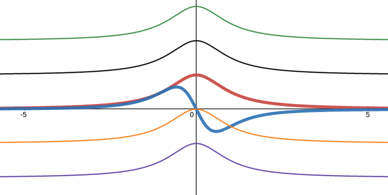
Next we’d like to apply this same sort of reasoning to the Witch itself. We’d like to answer the question, “What curve is the Witch of Agnesi the derivative of?” Whatever that curve is, we’ll call it the antiderivative of the Witch for obvious reasons.
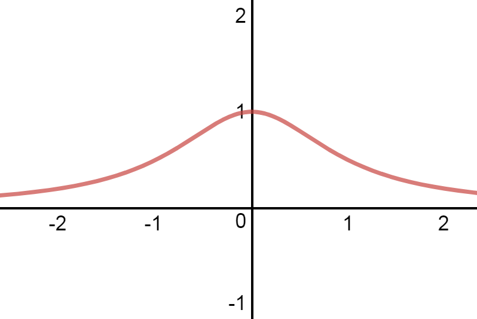
As before, by simply looking at the graph of the Witch we can see that: (1) At the extreme ends of its graph the antiderivative will have a positive slope which gets closer and closer to zero as we go farther from the origin, but (2) since the Witch never crosses the \(x\)-axis the antiderivative will never have a horizontal slope, and (3) at \(x=0\) the slope of the antiderivative will be equal to one. A sketch of the antiderivative of the Witch begins to emerge when we put these three observations into our graph:
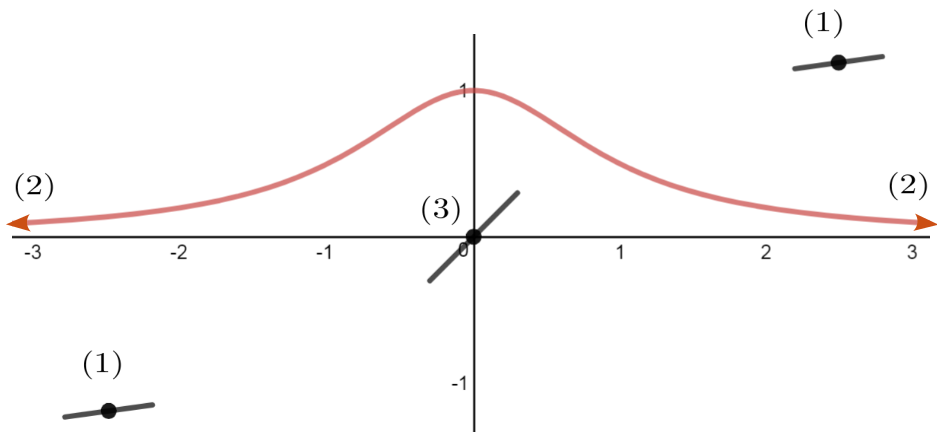
Continuing to fill between the black segments in the same fashion the sketch becomes even clearer:
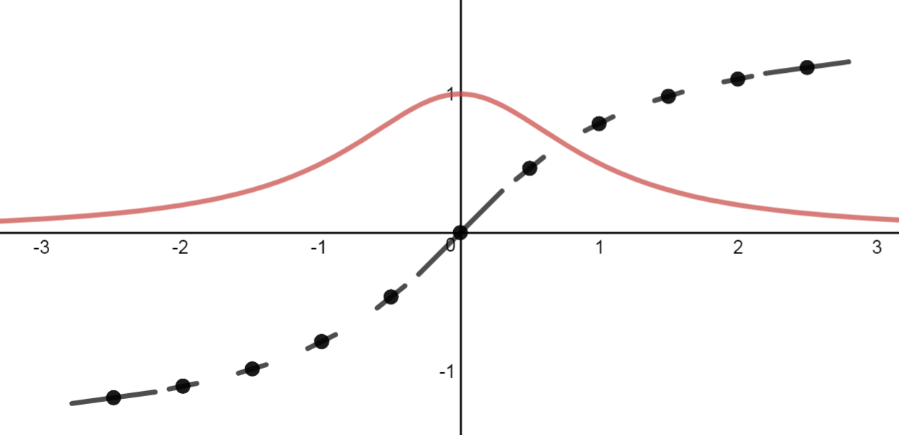
Finally, connecting the dots with a smooth curve we see the the graph of the antiderivative of the Witch of Agnesi must look like this:
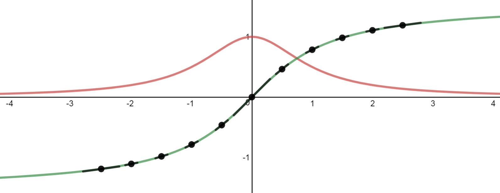
We’ve been a little lazy with our use of language. As we saw in [cross-reference to target(s) "DRILLNonUniqueAntiderivative" missing or not unique], the antiderivative is not unique, so it is improper to speak of the antiderivative. Any one of the curves shown below could be an antiderivative of the Witch of Agnesi. (Except the black one, of course. That’s the Witch.)
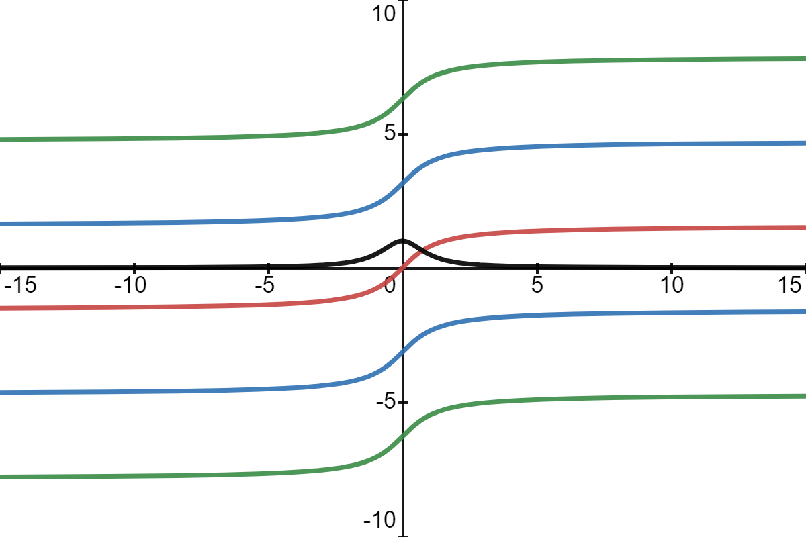
This graph should look very familiar to you. It looks very much like the graph of the arctangent function we discussed in [cross-reference to target(s) "SECinverse-tan-and-cot" missing or not unique], doesn’t it? Do you suppose it is possible that the derivative of the arctangent function is the Witch of Agnesi?
Of course it is. Why else would we have led you down this path? But there are some subtleties here that we shouldn’t ignore. For example we will want to find a function that is the antiderivative of the Witch. We will proceed cautiously.
The following exercise is not directly related to the Witch of Agnesi. We include it so that you can get practice relating the graphs of functions, there derivatives, and their antiderivatives, as this is a very useful skill. We will need it in a far more substantial way in [cross-reference to target(s) "SECgraph-without-form" missing or not unique] when we get there.
Problem6.83.
Sketch the graph of the derivative and the antiderivative of each of the following curves on the same set if axes,
Since we want to find a function whose derivative is the Witch of Agnesi and we are pretty sure that each of the branches of the arctangent multifunction takes the shape of the Witch’s antiderivative it is tempting to assume that the branch of the arctangent shown at the right is the function we are looking for. But we must be careful. Reasoning from pictures, as we’ve just done, can be very useful. but the most we can hope for when reasoning from pictures is an intuitive feel for the problem. We always need to confirm our intuition analytically. Always.
So we will verify, analytically, our conjecture that the derivative of the inverse tangent function is the Witch of Agnesi. From our definition of \(\inverse\tan(x)\) we know that \(y=\inverse\tan(x)\) precisely when\aside{Notice how cavalierly we’ve ignored the necessary constraints on the domain of the tangent. The function \(\inverse\tan(x)\) is not the inverse of \(\tan(x)\) because the domain of \(\tan(x)\) is \(\RR\text{.}\) It is the inverse of \(\tan(x)\text{,}\) with domain, \(\frac{-\pi}{2}\lt x \lt\frac{\pi}{2}\text{.}\) The domain is part of the definition of the function.} \(\tan(y)=x\text{.}\) Differentiating \(\tan(y)=x\) gives: \begin{align*} \dx(\tan(y)) \amp = \dx{x} \sec^2(y)\dx{y} \amp = \dx{x} \dx{y}\amp = \frac{1}{\sec^2(y)}\dx{x}. \end{align*}
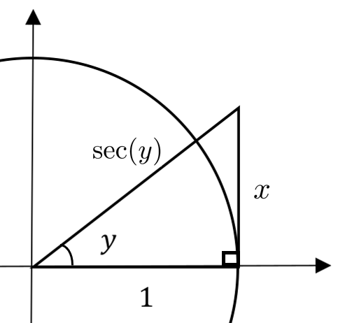
This is a correct formula for the differential of the arctangent function. However, there are two problems: (1) it does not seem to match our conjecture, and (2) even if it is correct this formula will not be very useful to us in this form since we have \(\dx{y}\) in terms of \(y\) itself. We can address both of these problems by finding \(\dx{y}\) in terms of \(x\) and \(\dx{x}\text{.}\)
Referring to the diagram at the right, recall from [cross-reference to target(s) "SECTIONsubsec:trig-interl" missing or not unique] that \(\tan(y)=\frac{x}{1}=x\) so \(y=\inverse\tan(x)\text{.}\) The hypotenuse in the diagram at the right is \(\sec(y)\) so from the Pythagorean Theorem we see that \(\sec^2(y)=1+x^2\text{.}\) Thus
This is weird isn’t it? None of the functions on the left is \(\inverse\tan(x)\) but they all have the same derivative as \(\inverse\tan(x)\text{.}\) Can you explain this? \hint{Let \(y_1=\inverse\tan(x)\) and \(y_2=\inverse\tan(\kappa)\text{.}\) What is \(\tan(y_1+y_2)\text{?}\)}
(f)
Now show that \(\dx{\left(\inverse\tan\left(\dfrac{\kappa+x}{1-\kappa x}\right)\right)}
= \dfrac{1}{1+x^2}\dx{x}\) where \(\kappa\) is an arbitrary constant.
Section6.7The Other Inverse Trigonometric Functions
Despite how much time we spent talking about them, the single valued branches for \(y=\inverse\tan(x)\) and \(y=\inverse\cot(x)\text{,}\) were actually fairly apparent from the graphs of \(x=\tan(y)\) and \(x=\cot(y)\text{.}\) All we had to do was choose one continuous branch from either graph. We described the process carefully because for the other inverse trigonometric functions things are a little more problematic. For those we will have to use the derivatives of our “arc” multifunctions as a guide, rather than the multifunctions themselves.
In general, we define an arc[function] as \(\text{arcfunction}(x)=y\) precisely when \(\text{function}(y)=x\text{.}\) So, \(\arcsin(x)=y\) when \(\sin(y)=x\) and \(\arccos(x)=y\) when \(\cos(x)=y\text{.}\)
Subsection6.7.1The Inverse Sine Function: \boldmath \(\inverse\sin(x)\)
When we graph \(\arcsin(x)\) by flipping the graph of \(\sin(x)\) across the graph of the line \(y=x\) we get the sketch at the right. For the value of \(x\) shown in the sketch the arrows point to a few of the possible values of \(\arcsin(x)\text{.}\) There are infinitely many, so obviously \(\arcsin(x)\) is also a multifunction, not a function.
To find the differentials of \(y=\arcsin(x)\) and \(y=\arccos(x)\) we proceed just as we did with the \(\arctan(x)\) and \(\arccot(x)\text{.}\) If \(y=\arcsin(x)\) then \(x=\sin(y)\) so: \begin{align*} \dx{(\sin(y))}\amp = \dx{x} \cos(y)\amp =\dx{x} \dx{y}\amp =\frac{1}{\cos(y)}\dx{x} \end{align*}
Drill6.89.
Use the diagram below, \centerline{\includegraphics*[height=1.4in,width=2.24in]{../Figures/CosInvSin1}} to show that
Use the fact that \(y=\arccos(x)\) if and only if \(\cos(y)=x\) and proceed as we did in [cross-reference to target(s) "DRILLdrill:InvSin1" missing or not unique] to show that
\comment{Notice how this formula differs from the one you found in [cross-reference to target(s) "DRILLdrill:InvSin1" missing or not unique].}
(b)
Derive the same result from the identity: \(\arccos(x)= \frac{\pi}{2}-\arcsin(x)\text{.}\)
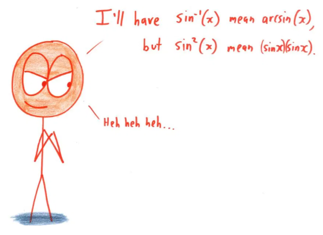
Figure6.91.The World’s Most Evil Mathematician, by Ben Orlin
The plus/minus and minus/plus that appear in [cross-reference to target(s) "EQInvSin11" missing or not unique][cross-reference to target(s) "EQInvCos1" missing or not unique], respectively, are present because, \(\arcsin(x)\) and \(\arccos(x)\) are both multifunctions like \(\arctan(x)\text{.}\)
Since \(\arcsin(x)\) is not a function at all it can’t be the inverse function of \(\sin(x)\text{.}\) Once again, to create an inverse sine function (which we will call \(\inverse\sin(x)\)) we will have to restrict the range of \(\inverse\sin(x)\) just like we restricted the range of \(\inverse\tan(x)\text{.}\) The question is, what restriction should we impose?
When we were looking to restrict the range of the \(\inverse\tan(x)\) there was a natural choice that was clearly visible in the graph. Notice that the derivative of \(\arctan(x)\) (and thus the derivative of \(\inverse\tan(x)\)) is always positive while the derivative of the \(\arccot(x)\) (and thus the derivative of \(\inverse\cot(x)\)) is always negative. This happens naturally for the tangent and cotangent, but not for the arcsine, the arccosine or the other trigonometric functions.
But this does suggest how we might proceed. As you can see in the sketch at the right the slope of \(\arcsin(x)\) is sometimes positive and sometimes negative. Since we must restrict the range of \(\inverse\sin(x)\text{,}\) we may as well make a convenient choice. We’d like to constrain the range of the inverse sine in such a way that its derivative is always positive, and we’d like to constrain the range of the inverse cosine in such a way that its derivative is always negative.
From the sketch we see that if we restrict the range of \(\inverse\sin(x)\) to the interval \([-\pi/2, \pi/2]\) the graph of \(\inverse\sin(x)\) (in blue) will always\aside{Except at the endpoints of course. What do you think the slope of \(\inverse\sin(x)\) is at \(x=\frac{\pi}{2}\text{?}\)} have a positive slope, and therefore a positive derivative.
With this restriction in place we define the derivative of the inverse sine as follows.
Definition6.93.The Derivative of the Inverse Sine.
The derivative of the inverse sine function is defined to be, \centerline{\(\displaystyle\dfdx{(\inverse\sin(x))}{x}=\frac{1}{\sqrt{1-x^2}}\text{,}\)} where \(-\frac{\pi}{2}\lt \inverse\sin(x)\lt \frac{\pi}{2}\text{.}\)
Problem6.94.
What function is \(\inverse\sin(x)\text{,}\) as defined in [cross-reference to target(s) "DEFInvSin" missing or not unique] the inverse off? \hint{Naturally, \(\inverse\sin(x)\) is the inverse of \(\sin(x)\text{,}\) but with which domain?}
Similarly, if we restrict the range of \(\inverse\cos(x)\) to \(0\lt x \lt\pi\) its derivative will always be negative.
Definition6.95.The Derivative of the Inverse Cosine.
The derivative of the inverse sine function is defined to be, \centerline{\(\displaystyle\dfdx{(\inverse\cos(x))}{x}=\frac{-1}{\sqrt{1-x^2}}\text{,}\)} where \(0\lt x\lt \pi\text{.}\)
Problem6.96.
(a)
Show that if \(y=\arcsin(x)\) then \(y\) satisfies the differential equation
To find the differential of \(\arcsec(x)\) we refer to the sketch at the right and we proceed exactly as before. If \(y=\arcsec(x)\text{,}\) then \(x=\sec(y)\) so \begin{align*} \dx{(\sec(y))} \amp =\dx{x} \sec(y)\tan(y)\dx{y}\amp = \dx{x} \intertext{so that} \dx{y} \amp =\frac{{1}}{\sec(y)\tan(y)}\dx{x}. \end{align*}
Drill6.98.
Show that: \(\dx\left(\arcsec(x)\right)=\frac{\pm1}{x\sqrt{x^2-1}}\dx{x}. \)
Problem6.99.
(a)
Use the fact that \(y=\arccsc(x)\) if and only if \(\csc(y)=x\) and proceeding as we did above, show that
The function \(y=\arccsc(x)\) satisfies the same differential equation. Show this in two different ways.
By direct computation, just as you did part (a).
By direct computation, after first observing that \(\arccsc(x)=\frac\pi2-\arcsec(x)\text{.}\)
Again we will want to define the inverse secant, \(y=\inverse\sec(x)\) by restricting the range of the multifunction \(y=\arcsec(x)\) in such a way that the derivative of \(\inverse\sec(x)\) will always be positive. Similarly for the inverse cosecant function.
But forcing the derivative of the inverse secant to always be positive is a bit harder for a couple of reasons. The first is just that these functions are used less and thus we are not as familiar with them. The other is the nature of the derivative formula itself. Recall that
This time it is the presence of the \(x\) in the denominator along with the \(\pm1\) in the numerator that is troublesome. By choosing the range constraint judiciously we can control whether the plus or the minus is chosen in the numerator but any reasonable constraint on the range of \(\inverse\sec(x)\) will always include both positive and negative numbers in its domain. So the \(x\) in the denominator will make the derivative of \(\inverse\sec(x)\) positive for some values and negative for others. We don’t want that. We want it to be positive.
Usually when we want things in the world to be simple, Nature just laughs at us. But not this time. This time the problem is simply that we have too many choices. Both the \(\pm1\) in the numerator and the \(x\) in the denominator will influence the sign (positive or negative) of the expression \(\frac{\pm1}{x\sqrt{x^2-1}}\text{.}\) If they are both in play it is hard to control the sign. So to simplify things we just declare, by fiat, that the \(x\) in the denominator will be positive. Specifically, we’ll replace the \(x\) in the denominator with \(\abs{x}\text{.}\) Now we can control the sign of the derivative of the \(\inverse\sec(x)\) by simply constraining its range.
Problem6.101.
The sketch below \centerline{\includegraphics*[height=1.6in,width=2in]{../Figures/arcsec5}} shows that if we constrain the range of the \(\inverse\sec(x)\) to be the interval \((0, \pi/2)\cup(\pi/2,\pi)\) then
Use the identity \(\inverse\csc(x)=\frac\pi2-\inverse\sec(x)\) to show that \(\dfdx{(\inverse\csc(x))}{x}=\frac{-1}{\abs{x}\sqrt{x^2-1}}. \)
Until now there has been a pattern to differentiation that we have not remarked on. But you may have noticed that when we differentiate a function we usually get back another function of the same type. That is,
The derivative of a polynomial is another polynomial,
The derivative of a quotient of polynomials is another quotient of polynomials,
The derivative of a trigonometric function is another trigonometric function.
The inverse trigonometric functions break this pattern. The derivative of an inverse trigonometric function is not another inverse trigonometric function. Nor is it a trigonometric function, a polynomial, or a quotient of polynomials\aside{Well, actually that’s not quite true. The derivative of the inverse tangent is a quotient of polynomials, and a particularly simple one at that. But it is not an inverse trigonometric function}.
Do you suppose there is any significance to this?
The inverse trigonometric functions will not have a significant role in our story for a while. However they will be very useful in some topics that will come up next semester. We’ve introduced them here simply because it makes sense to develop all of the differentiation rules at more or less the same time.
We now have differentiation formulas for all of the inverse trigonometric functions. These, along with the constraints on their ranges are given in the table below. Memorize them! You will need them.
Now compute \(\dx\left(\inverse\sin\left(\frac{x}{\sqrt{x^2+a^2}}\right)\right),\) where \(a\gt0.\) Does this problem change if \(a\) is negative? How?
Problem6.106.
Show that each of the following statements is true.
Show that \(\dx\left(\inverse\cot\left(\frac{1-x}{1+x}\right)\right)=
\dx\left(\inverse\tan(x)\right)\text{.}\)
(b)
Part (a) says that the graphs of \(y=\inverse\cot\left(\frac{1-x}{1+x}\right)\) and \(y=\inverse\tan(x)\) have the same slope when \(x\neq-1\) and that their graphs should differ by a constant. Substitute \(x=0\) into both to see what this constant should be.
(c)
Now plot the graphs of both. Do they differ by a constant? Explain why or why not.
Section6.8Curvature
\TLogo{appendix:radi-curv-accord}
Intuitively speaking, the curvature of a plane curve is how quickly a curve turns. It is an important property to understand when designing, for example, a road or a roller-coaster where the sharpness of a curve determines the safe speed limit for that curve. Also, the stresses imposed on the physical structure of a moving object during any high speed maneuver are directly related to the curvature of their paths.
One of the first people to study the notion of curvature was Nicole Oresme\aside{Pronouced “Or-em,” not “Or-es-me.” 33 } (\(1323-1382\)). Oresme defined the curvature of a straight line to be zero (no surprise), and he defined the curvature of a circle to be the reciprocal of its radius. For example, a circle with radius \(2\) is \(\frac12\) whereas the curvature of a circle with radius \(1\) is \(1\text{.}\) This makes intuitive sense. A circle with a smaller radius is “more curved” that one with a larger radius. The radius of the earth is so large that the curvature of say, the equator, is so close to zero as to be completely imperceptible, at least for someone standing on the surface.
Oresme’s definition of curvature works just fine for circles and straight lines but we’d like to extend it to more general curves. Specifically, given a curve, we’d like to associate a number with each point on the curve which tells us the curvature at that point. Ideally, this should also generalize Oresme’s results for straight lines and circles.
The sketch at the right shows three circles in the first quadrant with radii, \(\frac13\text{,}\)\(1\text{,}\) and \(2\text{,}\) respectively. Notice that on the unit circle, the point of tangency travels \(\frac{\pi}{2}\) units along the circumference while the the red tangent line rotates through an angle of \(\frac{\pi}{2}\) radians. On the circle of radius \(2\text{,}\) the point of tangency travels \(2 \times \frac{\pi}{2}\) units to turn the tangent line the same \(\frac{\pi}{2}\) radians, whereas on the circle of radius \(1/3\text{,}\) the point of tangency travels \(\frac13\times\frac{\pi}{2}\) units to turn the tangent line the same \(\frac\pi2\) radians. This suggests that a possible definition for curvature might be the number of radians the tangent line rotates through as it travels along the curve divided by the distance traveled along the curve while making the turn. In other words, the curvature for a circle of radius \(r\) would be
\begin{equation*}
\frac{\theta \text{ radians }}{r\theta \text{ units}}=\frac{1}{r}
\text{ radians per unit. }
\end{equation*}
This seems to make intuitive sense too. A circle with a radius of \(0.0000001\) meters certainly seems to be “more curved” than a circle with radius \(1,000,000,000\) meters.
By the same reasoning, the curvature of a straight line would be zero. (Why?)
This definition works fine for circles and straight lines which have constant curvature, but what about a more general curve. What if the curvature changes from point to point along the curve such as a long and winding road.
Clearly we’ll need a definition of curvature that also changes from point to point on the curve. So it seems reasonable to consider infinitely small changes in both the angle \(\theta\) and in arclength \(s\text{.}\) More precisely, we make the following definition.
Suppose the point \(P=(x,y)\) lies on a curve \(C\) as in the sketch at the left. Let \(\theta\) represent the angle formed in the figure at the left by the line tangent to curve \(C\) at point \(P\text{,}\) with some fixed line.
To keep things simple we will always designate \(\theta\) to be the angle the tangent line forms with a horizontal line.
It can be difficult at first to see how [cross-reference to target(s) "EQCurvatureDef" missing or not unique] measures curvature but think carefully for a moment about the meaning of the expression \(\dfdx{\theta}{s}\text{.}\) Loosely put “the rate of change of \(\theta\) (the angle of our curve with the horizontal) with respect to the change of \(s\) (the arclength of our curve)” is the ratio of how much a point moving on the curve has changed direction to how far it has moved. The more our curve changes direction in a given distance the more it is curved and so the more curvature it has.
Don’t let the absolute value bars in this formula disturb you. They are there simply because we don’t want to consider whether a curve bends to the right or to the left (whether \(\theta\) is increasing or decreasing), but just how fast it bends.
A good test of the value of a new definition is whether or not it produces the same results that the earlier, more intuitive musings that led you to it. It should be clear that with this definition, the curvature of a straight line would still be zero. (Why?)
Use the sketch at the right of a quarter-circle with radius \(r\) to show that [cross-reference to target(s) "DEFcurvature-1" missing or not unique] yields a curvature of \(\kappa =\frac{1}{r}\text{.}\)
In [cross-reference to target(s) "PROBCircleCurvature" missing or not unique]) it was helpful to know that the line tangent to a circle is always perpendicular to its radius. But for an arbitrary curve this is not necessarily true. Let’s look at the general situation.
First recall from [cross-reference to target(s) "EQTanEqDeriv" missing or not unique]) that \(\tan(\theta) = \dfdx{y}{x}\text{.}\) Rewrite this as \(\theta=\inverse\tan\left(\dfdx{y}{x}\right)\) and differentiate so that
Dividing both sides of [cross-reference to target(s) "EQDiffTheta" missing or not unique] by \(\dx{s}\) we have, \begin{align} \dx{\theta}\amp =\frac{1}{1+\left(\dfdx{y}{x}\right)^2}\cdot\dx\left(\hskip-1mm\dfdx{y}{x}\right).\label{eq:DiffTheta} \nonumber \dfdx{\theta}{s}\amp =\frac{1}{1+\left(\dfdx{y}{x}\right)^2}\cdot\dfdx{\left(\dfdx{y}{x}\right)}{s}. \intertext{Next we “uncancel” a \textcolor{red}{\(\frac{1}{\dx{x}}\)}} \nonumber \dfdx{\theta}{s}\amp =\frac{1}{1+\left(\dfdx{y}{x}\right)^2}\cdot\dfdx{\left(\dfdx{y}{x}\right)}{s}\cdot\textcolor{red}{\frac{\frac{1}{\dx{x}}}{\frac{1}{\dx{x}}}} \intertext{which gives} \dfdx{\theta}{s}\amp =\frac{1}{1+\left(\dfdx{y}{x}\right)^2}\cdot\frac{\textcolor{blue}{\dfdx{\left(\dfdx{y}{x}\right)}{x}}}{\dfdx{s}{x}}\label{eq:SecondDifferentials} \intertext{or} \dfdx{\theta}{s} \amp =\frac{\textcolor{blue}{\dfdxn{y}{x}{2}}}{\left[1+\left(\dfdx{y}{x}\right)^2\right]\dfdx{s}{x}}.\label{eq:CurvaturePreamble} \end{align}
Problem6.113.
Use [cross-reference to target(s) "EQCurvaturePreamble" missing or not unique]) to show that
The time has come for us to begin understanding why differentials were abandoned as a foundational concept for Calculus. We are entering uncharted waters but we won’t dive into the deep part just yet. We’ll only wade in a little way.
To indicate that uncharted waters were the most dangerous medieval mapmakers would fill in the unexplored regions of their maps with illustrations of dragons and other mythological beasts. The Lennox Globe, in the Rare Book Division of the The New York Public Library (1510 CE), even has the inscription “Hic Sunt Dracones” (Here Be Dragons) along the eastern Asian coast.
The concept of the differential of a differential, like \(\dx^2x\) or \(\dx^2y\text{,}\) is a mathematical dragon of sorts.
We will proceed carefully.
If the entire development from [cross-reference to target(s) "EQDiffTheta" missing or not unique]) to [cross-reference to target(s) "EQCurvaturePreamble" missing or not unique]) feels contrived, it’s because it is contrived. In particular the “uncancelling” step is clearly a trick in the sense that nothing we did before that step seems to motivate the uncancelling. We just pulled it out of the air, and it worked. Clearly we knew that it would work, but why do you suppose we used a trick rather than explaining what we were doing?
Since everything we did hinged on the observation that \textcolor{blue}{\(\dfdxn{y}{x}{2}=\dfdx{\left(\dfdx{y}{x}\right)}{x}\)} (from [cross-reference to target(s) "EQSecondDifferentials" missing or not unique]) and [cross-reference to target(s) "EQCurvaturePreamble" missing or not unique]) it would seem more natural to simply apply the Quotient Rule to \(\dx{\left(\dfdx{y}{x}\right)}\text{,}\) wouldn’t it?
Next we simplify the notation a bit. Let\aside{Note this very carefully, \(\d{(\dx{y})}\neq (\dx{y})^2\text{,}\) because the latter is \((\dx{y})\times(\dx{y})\) whereas the former is the second difference of \(y\text{.}\)} \(\textcolor{red}{\d{(\dx{y})}}=\dx^2{y}\) and \(\textcolor{red}{\d{(\dx{x})}}=\dx^2{x}\) so that,
But the expressions \(\dx(\dx{x}) =\dx^2x\) and \(\dx(\dx{y}) =\dx^2y\) are a problem because to get [cross-reference to target(s) "EQCurvaturePreamble" missing or not unique]) when we are finished we need to have \(\dx^2x =0\text{,}\) but \(\dx^2y\neq0\text{,}\) which seems inconsistent. Why would \(\dx^2y\) be something, but \(\dx^2x\) be nothing? This is very troubling.
We have observed regularly beginning in Chapter 4 that the concept of a differentials is questionable. But if differentials are problematic, second differentials -- the differential of a differential -- is even more moreso, if that is possible.
The problem here is conceptual, not computational. That is, there is no computation we can do to see what the value of \(\dx^2x\) must be zero. Rather, we need to think carefully about the meanings of our symbols.
Leibniz’ Conception
When we use Leibniz’ differential notation we think of \(\dx{y}\) and \(\dx{x}\) as infinitesimal increments in the \(x\) and \(y\) coordinates. Specifically, \(\dx{x}=x_2-x_1\) where \(x_2\) and \(x_1\) are infinitely close together. This is already a difficult thing to accept.
But if we stick with Leibniz then it must be that \(\dx(\dx{x})
= \dx{x_2}-\dx{x_1}\text{,}\) right? We can write this down and we can read these symbols easily enough. But what they seem to mean is that \(\dx(\dx{x})\) is the infinitely small difference of two infinitely small differences. So does that mean that \(\dx(\dx{x})\) just another differential? Or is smaller than \(\dx{x}\text{?}\) But \(\dx{x}\) is infinitely small so how could \(\dx{x}\) be smaller than that?
Down that path be dragons. We won’t go there.
Newton’s Conception
Instead we’ll adopt Newton’s viewpoint and hope that it gives us a meaningful interpretation of our symbols.
For Newton, time was the only variable, and time always flows forward at a constant rate. He thought of a variable, \(x\) for example, as moving, or flowing (fluent) in time and \(\dot{x}\) was the rate of flow (fluxion) of the fluent\(x\text{.}\) In the simplest example, if \(x\) is the position of a point then \(\dot{x}\) is its velocity.
Newton only applied his dot notation to something that was changing in time; something that has a rate of change with respect to time. Can we apply it to time itself?
Sure we can. Time itself is “changing in time”, isn’t it? Time flows at a rate of \(1\) second per second, or one day per day, or one century per century. The units don’t really matter. Loosely speaking (and mixing the Newtonian and Leibnizian viewpoints a bit), an increment of time now has the same magnitude as an increment of time later, has the same magnitude as an increment of time in the past. That is, every increment of \(t\) is the same size. If we let \(t\) represent elapsed time then this means that the infinitesimal increment \(\dx{t}\) is constant, so the fluxion of \(\dx{t}\) is zero: \(\dx(\dx{t})=\dx^2{t}=\dot{\dx{t}}=0\text{.}\) However, keep in mind that this is not true of a quantity that is flowing at a variable rate. For example, if \(y=t^2\) then \(\eval{\dx{y}}{t}{1}=2\dx{t}\) whereas \(\eval{\dx{y}}{t}{2}=4\dx{t}\text{.}\)
This solves our problem. If \(\dx{t}\) is constant then by the Constant Rule
Moreover we always have the option of adopting Newton’s convention that the only independent variable is time so that when we write \(\dfdx{y}{x}\) we are thinking of the independent variable \(x\) as time (although we rarely say so out loud), and we are thinking of \(y\) as functionally dependent on time (represented by \(x\) in this case). Therefore
\begin{equation*}
\dx^2x=\dx(\dx{x})=0 \text{ and } \dx^2y=\dx(\dx{y})\neq0.
\end{equation*}
As a practical matter we will rarely be interested in second order differentials like \(\dx^2x\) or \(\dx^2y\text{.}\) As we indicated in [cross-reference to target(s) "SEChist-intr" missing or not unique] differentials are really just an aid to computation; a convenient fiction. They are a helpful aid but the more important and useful concept is the derivative. Differentials only serve as a step along the way to finding derivatives.
We will be very interested in second order derivatives: \(\dfdx{\left(\dfdx{y}{x}\right)}{x} = \dfdxn{y}{x}{2} \) because these often represent a real, physical quantity like force or acceleration.
But now there is another difficulty that can’t be ignored. In order to make sense of the expression \(\dx^2{x}\) we had to abandon Leibniz’ conception altogether. It is nice that Newton’s viewpoint gives us a way to make sense of the notation but what this tells us is that taking either viewpoint (Newton’s or Leibniz’) does not get us to the logical heart of the matter. A viewpoint is just a manner of thinking. We adopt a viewpoint in order to build intuition.
When two viewpoints are at odds it means that we need something more general. In this case we need a theory that subsumes, and can replace, the views of both Leibniz and Newton. This issue must, eventually, be addressed. But for now we will continue to work intuitively. When we are done, when we stand at the top of the Calculus mountain we will be able to see the paths that Newton and Leibniz each took to get to the top. We will begin our own trek to the summit in [cross-reference to target(s) "CHAPTwhats-wrong-with" missing or not unique].
END OF DIGRESSION
Since the equation of a straight line is \(y=mx+b\) it is clear that [cross-reference to target(s) "EQCurvatureDef2" missing or not unique]) recovers Oresme’s assertion that the curvature of a straight line must be zero. (Why?)
Example6.115.
Let’s apply [cross-reference to target(s) "EQCurvatureDef2" missing or not unique]) to a circle to see if this agrees with Oresme’s definition of the curvature of a circle. Consider the circle of radius \(r\) given by the graph of \(x^2+y^2=r^2\text{.}\) Differentiate to obtain \(2x\dx{x}+2y\dx{y}=0\) so that
Use the values for \(\dfdx{y}{x}\) and \(\dfdxn{y}{x}{2}\) we just computed to show that for a circle of radius \(r\text{,}\) the curvature \(\kappa=1/r\text{.}\)
As we said earlier, the curvature of a general curve need not be constant, but we can still apply [cross-reference to target(s) "EQCurvatureDef2" missing or not unique]).
Problem6.117.
(a)
Show that the curvature of the parabola \(y=x^2\) is given by \(\displaystyle\kappa=\frac{2}{(1+4x^2)^{\frac32}}\text{.}\)
(b)
Where does the greatest curvature occur? Does this agree with what you can see on the graph of \(y=x^2\text{?}\)
Problem6.118.
Consider the ellipse given by \(\frac{x^2}{a^2}+\frac{y^2}{b^2}=1\text{,}\)\(a\gt b\gt 0\text{.}\) \centerline{\centerline{\includegraphics*[height=1.7in,width=2.8in]{../Figures/Curvature7}}}
(a)
Show that the curvature is given by \(\kappa=\frac{a^4b^4}{(a^4y^2+b^4x^2)^{\frac32}}\text{.}\) \hint{Rewrite \(\frac{x^2}{a^2}+\frac{y^2}{b^2}=1\) as \(b^2x^2+a^2y^2=a^2b^2\text{.}\) }
(b)
Looking at this graph it appears that the curvature at \((a,0)\) should be greater than at \((0,b)\text{.}\) Use the formula you just derived to verify this.
(c)
A circle is the special case of an ellipse when \(a=b\text{.}\) Use the formula from part (a) to compute the curvature of a circle.
Problem6.119.
Recall that in [cross-reference to target(s) "EXERCISEprob:DescartesNormals2" missing or not unique] of [cross-reference to target(s) "SECTIONsec:descartes-normals" missing or not unique] we used Descartes’s Method of Normals to find the line tangent to the graph of \(y=\sqrt{2x}\) at the point \((2,2)\) by finding a circle with its center on the \(x\)-axis which touches the graph exactly once, as seen in the sketch below. \centerline{\includegraphics*[height=1.8in,width=2.4in]{../Figures/DescartesCircle5}}
(a)
Compute the curvatures of the parabola and the circle seen in the diagram at the right at their point of intersection to show that they are not the same.
(b)
Find the equation of the circle which passes through the point \((2,2)\text{,}\) and also has the same slope and curvature as \(y=\sqrt{2x}\) at the point \((2,2)\text{.}\) This is known as the \term{osculating circle}, or “kissing circle”.
(c)
Show that the center of the osculating circle is on the line which passes through \((2,2)\) and \((3,0)\text{.}\)
We observed earlier that if we define curvature using [cross-reference to target(s) "EQCurvatureDef" missing or not unique]) then the curvature of a straight line will be zero as Oresme said it should be. The converse is also true. Specifically, if \(\abs{\dfdx{\theta}{s}}=\kappa=0\) then \(\theta\) must be a constant and so \(\dfdx{y}{x}=\tan(\theta)\) must also be a constant. (For simplicity we’ll ignore the case where \(\theta=\pm\frac{\pi}{2}\text{.}\))
Drill6.120.
Assume that \(-\frac{\pi}{2}\lt \theta \lt \frac{\pi}{2}\) and that \(\theta\) is constant. Complete the line of reasoning we began in the previous paragraph to show that
for some number \(b\text{.}\) Explain how you know that this is this the equation of a line.
We’ve also shown that the curvature of a circle is also constant (specifically, it is the reciprocal of the circle’s radius). The converse of this is also true\aside{But only if we confine our attention to curves in the plane. It turns out that there are many curves in three-dimensional space, (that is, curves that are not constrained to a two-dimensional plane) with constant curvature which are neither circles nor lines.}. This is shown in much the same manner as the straight line but, naturally, the computations are more complex.
Figure6.121.This figure needs a caption.
To see this recall the diagram that we used to define curvature, shown at the right. If we suppose that \(\abs{\dfdx{\theta}{s}}=\kappa\) then we see that \(\dfdx{\theta}{s}=\pm\kappa\text{.}\) From our diagram we also see that
\begin{equation*}
\sin(\theta)=\dfdx{y}{s}\text{, and }
\end{equation*}
Complete the line of reasoning we began in the previous paragraph to show that \(\dx{y}=\pm\frac1\kappa\sin(\theta)\dx{\theta}\) and \(\dx{x}=\pm\frac1\kappa\cos(\theta)\dx{\theta}\text{.}\)
(b)
Next show that \begin{align*} x\amp=\pm\frac1\kappa\sin(\theta) +x_0 y\amp=\mp\frac1\kappa\cos(\theta) +y_0 \end{align*} for some constants \(x_0\) and \(y_0\text{.}\)
(c)
And finally, show that the point \((x,y)\) lies on a circle of radius \(\frac1\kappa\text{.}\) What is the equation of the circle?